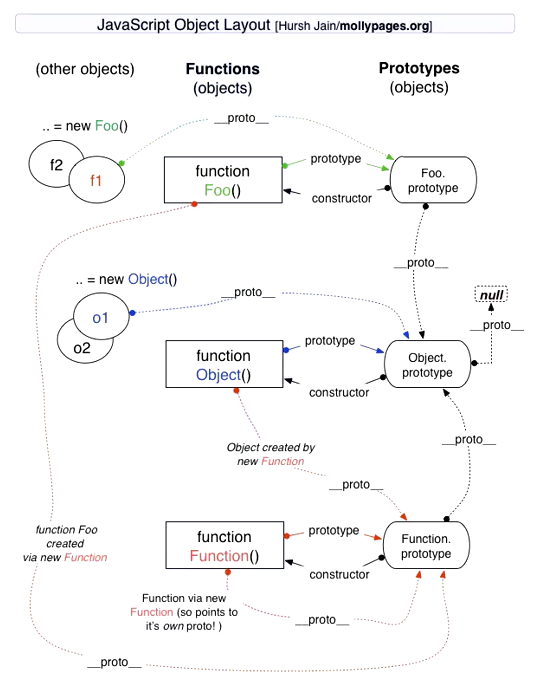

this绑定 this绑定的三种方式
默认绑定:独立调用,this指向window
1 2 3 4 5 6 7 8 9 10 11 12 13 14 15 16 17 18 19 20 21 22 23 24 25 26 27 28 29 30 31 32 33 34 35 36 37 <!DOCTYPE html > <html lang ="en" > <head > <meta charset ="UTF-8" > <meta name ="viewport" content ="width=device-width, initial-scale=1.0" > <title > Document</title > </head > <body > <script > function foo ( console .log ('foo的this' ,this ); } foo () var obj={ bar :function ( console .log ('bar的this' ,this ); } } var baz=obj.bar baz () function foo1 (fn ){ fn () } foo1 (baz) </script > </body > </html >
隐式绑定,通过某个对象进行调用的,this指向调用对象
1 2 3 4 5 6 7 8 9 10 11 12 13 14 15 16 17 18 19 20 21 22 23 24 <!DOCTYPE html > <html lang ="en" > <head > <meta charset ="UTF-8" > <meta name ="viewport" content ="width=device-width, initial-scale=1.0" > <title > Document</title > </head > <body > <script > function foo ( console .log ('foo' ,this ); } var obj={ name :"obj" , bar :foo } obj.bar () </script > </body > </html >
new绑定,this指向创建的空对象(函数当做一个类的构造函数来使用，也就是使用new关键字)
1 2 3 4 5 6 7 8 9 10 11 12 13 14 15 16 17 18 19 20 21 22 23 24 25 26 27 <!DOCTYPE html>
显式绑定,this指向要绑定的对象
1 2 3 4 5 6 7 8 9 10 11 12 13 14 15 16 17 18 19 20 21 22 23 24 <!DOCTYPE html > <html lang ="en" > <head > <meta charset ="UTF-8" > <meta name ="viewport" content ="width=device-width, initial-scale=1.0" > <title > Document</title > </head > <body > <script > function foo ( console .log ('foo' ,this ); } var obj={ name :'MirZ' } foo.call (obj) foo.apply (obj) </script > </body > </html >
显式绑定 call/apply
如果我们不希望在对象内部包含这个函数的引用同时又希望在这个对象上进行强制调用可以使用call和apply方法
第一个参数传入指定绑定的对象;
后面的参数，apply为数组，call为参数列表;
1 2 3 4 5 6 7 8 9 10 11 12 13 14 15 16 17 18 19 20 21 22 23 24 25 26 27 28 29 30 <!DOCTYPE html > <html lang ="en" > <head > <meta charset ="UTF-8" > <meta name ="viewport" content ="width=device-width, initial-scale=1.0" > <title > Document</title > </head > <body > <script > function foo (name, age ) { console .log ('foo调用' , this ); console .log ('参数' , name, age); } var obj={} foo.call ('1' , 'MirZ' , 18 ) foo.apply ('1' ,['MirZ' ,18 ]) </script > </body > </html >
bind
如果我们希望一个函数总是显示的绑定到一个对象上，可以使用bind绑定函数
使用bind方法，bind()方法创建一个新的绑定函数(bound function，BF)
绑定函数是一个 exotic function object(怪异函数对象，ECMAScript 2015 中的术语)
1 2 3 4 5 6 7 8 9 10 11 12 13 14 15 16 17 18 19 20 21 22 23 24 25 26 27 28 29 30 <!DOCTYPE html>
this绑定优先级
默认规则的优先级最低,存在其他规则时，就会通过其他规则的方式绑定this
显示绑定优先级高于隐式绑定
new绑定优先级高于隐式绑定
new绑定优先级高于bind
new绑定和call、apply是不允许同时使用的，所以不存在谁的优先级更高
new绑定可以和bind一起使用，new绑定优先级更高
bind和apply/call同时使用,bind优先级更高
箭头函数 箭头函数是ES6之后增加的一种编写函数的方法，并且它比函数表达式要更加简洁:
箭头函数不会绑定this、arguments属性,
箭头函数不能作为构造函数来使用(不能和new一起来使用，会抛出错误):
箭头函数的简写
优化二: 如果函数执行体中只有一行代码,那么可以省略大括号并且这行代码的返回值会作为整个函数的返回值
1 2 nums.forEach(item =>console .log (item))filter (item =>true )
优化三: 如果函数执行体只有返回一个对象，那么需要给这个对象加上()
1 2 var foo=() =>return { name :"abc" }var . bar=() =>name :"abc" })
*箭头函数不使用this的四种标准规则(也就是不绑定this)，而是根据*外层作用域 来决定this.**
this指向面试题:
1 2 3 4 5 6 7 8 9 10 11 12 13 14 15 16 17 18 19 20 21 22 23 24 25 26 27 28 29 30 31 32 33 34 35 36 37 38 39 40 41 42 43 44 45 46 47 48 49 50 51 52 53 54 55 56 57 58 59 60 61 62 63 64 65 66 67 68 69 70 71 72 73 74 75 76 77 78 79 80 81 82 83 84 85 86 87 88 89 90 91 92 93 94 95 96 97 98 99 100 101 102 103 104 105 106 107 108 109 110 111 112 113 114 115 116 117 118 119 120 121 122 123 124 var name = 'window' var person1 = {name : 'person1' ,foo1 : function (console .log (this .name )foo2 : () => console .log (this .name ),foo3 : function (return function (console .log (this .name )foo4 : function (return () => {console .log (this .name )var person2 = { name : 'person2' }foo1 (); foo1 .call (person2); foo2 (); foo2 .call (person2); foo3 ()(); foo3 .call (person2)(); foo3 ().call (person2); foo4 ()(); foo4 .call (person2)(); foo4 ().call (person2); var name = 'window' function Person (name ) {this .name = namethis .foo1 = function (console .log (this .name )this .foo2 = () => console .log (this .name ),this .foo3 = function (return function (console .log (this .name )this .foo4 = function (return () => {console .log (this .name )var person1 = new Person ('person1' )var person2 = new Person ('person2' )foo1 () foo1 .call (person2) foo2 () foo2 .call (person2) foo3 ()() foo3 .call (person2)() foo3 ().call (person2) foo4 ()() foo4 .call (person2)() foo4 ().call (person2) var name = 'window' function Person (name ) {this .name = namethis .obj = {name : 'obj' ,foo1 : function (return function (console .log (this .name )foo2 : function (return () => {console .log (this .name )var person1 = new Person ('person1' )var person2 = new Person ('person2' )obj .foo1 ()() obj .foo1 .call (person2)() obj .foo1 ().call (person2) obj .foo2 ()() obj .foo2 .call (person2)() obj .foo2 ().call (person2)
浏览器原理 浏览器渲染页面的过程 浏览器渲染页面过程:
浏览器渲染原理
在解析JS是堵塞也往往会带来新的问题，特别是现代页面开发中:
目前的开发模式中(比如Vue、React)，脚本往往比HTML页面更“重”处理时间需要更长所以会造成页面的解析阻塞，在脚本下载、执行完成之前，用户在界面上什么都看不到;
为了解决这个问题，script元素给我们提供了两个属性(attribute):defer和async。
defer
defer 属性告诉浏览器不要等待脚本下载，而继续解析HTML，构建DOM Tree
脚本会由浏览器来进行下载，但是不会阻塞DOM Tree的构建过程;
如果脚本提前下载好了，它会等待DOM Tree构建完成，在DOMContentLoaded事件之前先执行defer中的代码
多个带defer的脚本是可以保持正确的顺序执行的。
从某种角度来说，defer可以提高页面的性能，并且推荐放到head元素中;
注意:defer仅适用于外部脚本，对于script默认内容会被忽略
async
async 特性与 defer 有些类似，它也能够让脚本不阻塞页面。
async是让一个脚本完全独立的:
浏览器不会因 async 脚本而阻塞(与 defer 类似);
async脚本不能保证顺序，它是独立下载、独立运行，不会等待其他脚本
async不会能保证在DOMContentLoaded之前或者之后执行
:::info defer通常用于需要在文档解析后操作DOM的JavaScript代码，并且对多个script文件有顺序要求的;
async通常用于独立的脚本，对其他脚本，甚至DOM没有依赖的;
:::
Js原理 JS执行原理 初始化全局对象
js引擎会在执行代码之前，会在堆内存中创建一个**全局对象:**GlobalObject(GO)
该对象所有的作用域(scope)都可以访问;里面会包含Date、Array、String、Number、setTimeout、setlnterval等等.其中还有一个window属性指向自己
全局代码如何被执行?
js引擎内部有一个执行上下文栈 (Execution Context Stack，简称ECS)它是用于执行代码的调用栈
那么现在它要执行谁呢?执行的是全局的代码块
全局的代码块为了执行会构建一个 Global Execution Context(GEC)
GEC会 被放入到ECS中执行;
每一个执行上下文会关联一个VO(Variable Object，变量对象)* *,**变量和函数声明 会被添加到这个VO对象中
当全局代码被执行的时候，VO就是GO对象了
GEC被放入到ECS中里面包含两部分内容:
第一部分:在代码执行前，在parser转成AST的过程中，会将全局定义的变量、函数等加入等加入到GlobalObject中，但是并不会赋值;
这个过程也称之为变量的作用域提升(hoisting)
第二部分:在代码执行中，对变量赋值，或者执行其他的函数;
函数如何被执行?
在执行的过程中执行到一个函数时，就会根据函数体创建一个函数执行上下文(FunctionalExecutionContext，简称FEC)并且压入到EC Stack 中。
因为每个执行上下文都会关联一个VO，那么函数执行上下文关联的VO是什么呢?
当进入一个函数执行上下文时，会创建一个AO对象(Activation Object)
这个AO对象会使用arguments作为初始化，并且初始值是传入的参数;
这个AO对象会作为执行上下文的VO来存放变量的初始化;
作用域链
当进入到一个执行上下文时，执行上下文也会关联一个作用域链(Scope Chain)
作用域链是一个对象列表，用于变量标识符的求值;当进入一个执行上下文时，这个作用域链被创建，并且根据代码类型，添加一系列的对象
1 2 3 4 5 6 7 8 9 10 11 12 13 14 15 16 17 18 19 20 21 22 23 24 25 26 27 28 29 30 31 32 33 34 35 36 37 38 39 40 41 42 43 44 45 46 47 48 49 50 51 52 53 54 55 56 57 58 59 60 61 62 63 64 65 66 67 68 69 70 71 <!DOCTYPE html>
词法环境是一种规范类型，用于在词法嵌套结构中定义关联的变量、函数等标识符;
一个词法环境是由环境记录(Environment Record)和一个外部词法环境(oute;rLexicalEnvironment)组成:
一个词法环境经常用于关联一个函数声明、代码块语句、try-catch语句，当它们的代码被执行时，词法环境被创建出来;
全局词法环境
全局词法环境是最外层的词法环境，它在 JavaScript 程序开始执行时就被创建，并且在整个程序的生命周期内都存在。全局词法环境的外部引用为 null。
函数词法环境
每当调用一个函数时，就会为该函数创建一个新的词法环境。函数词法环境的外部引用指向创建该函数时所在的词法环境。
1 2 - LexicalEnvironment 用于处理let 、const 声明的标识符VariableEnyionment 用于处理var 和function 声明的标识符:
环境记录
在这个规范中有两种主要的环境记录值:声明式环境记录和对象环境记录。
声明式环境记录:声明性环境记录用于定义ECMAScript语言语法元素的效果，如函数声明、变量声明和直接将标识符绑定
对象式环境记录:对象环境记录用于定义ECMAScript元素的效果，例如WithStatement，它将标识符绑定与某些对象的属
关联起来。
JS内存管理 不管什么样的编程语言，在代码的执行过程中都是需要给它分配内存的，不同的是某些编程语言需要我们自己手动的管理内存,某些编程语言会可以自动帮助我们管理内存:
不管以什么样的方式来管理内存，内存的管理都会有如下的生命周期:
第一步:分配申请你需要的内存(申请);
第二步:使用分配的内存(存放一些东西，比如对象等);
第三步:不需要使用时，对其进行释放;
不同的编程语言对于第一步和第三步会有不同的实现:
手动管理内存:比如C、C++，包括早期的OC都是需要手动来管理内存的申请和释放的(malloc和free函数)
自动管理内存:比如Java、JavaScript、Python、Swift、Dart等，它们有自动帮助我们管理内存;
对于开发者来说，JavaScript的内存管理是自动的、无形的。我们创建的原始值、对象、函数.…这一切都会占用内存,但是我们并不需要手动来对它们进行管理JavaScript引l擎会帮助我们处理好它;
JavaScript会在定义数据时为我们分配内存。
JS对于原始数据类型内存的分配会在执行时，直接在栈空间进行分配;
JS对于复杂数据类型内存分配会在堆内存中开辟一块空间，并且将这块空间的指针返回值变量引用;
JS的垃圾回收机制 ** **因为内存的大小是有限的，所以当内存不再需要的时候，我们需要对其进行释放，以便腾出更多的内存空间。
在手动管理内存的语言中，我们需要通过一些方式自己来释放不再需要的内存，比如free函数:
这种管理的方式其实非常的低效，影响我们编写逻辑的代码的效率，
这种方式对开发者的要求也很高，并且一不小心就会产生内存泄露，
所以大部分现代的编程语言都是有自己的垃圾回收机制:
垃圾回收的英文是Garbage Collection，简称GC;对于那些不再使用的对象，我们都称之为是垃圾，它需要被回收，以释放更多的内存空间;而我们的语言运行环境，比如java的运行环境IM，JavaScript的运行环境js引擎都会内存 垃圾回收器
GC算法-标记-清除算法
标记-清除是最基础的垃圾回收算法。它的工作原理如下
标记清除的核心思路是可达性,这个算法是设置根对象(root object)垃圾回收器会定期从这个根开始，找所有从根开始有引用到的对象，对于哪些没有引用到的对象，就认为是不可用的对象
标记阶段：垃圾回收器会遍历所有的对象，从根对象（如全局对象）开始，将所有可达对象标记为活动的。
清除阶段：对于那些没有被标记为活动的对象，垃圾回收器会将其内存释放。
优点
可靠性：确保所有不再需要的对象都会被正确回收。
简单性：实现相对简单，易于维护。
缺点
暂停程序执行：在垃圾回收期间需要暂停程序执行（Stop-the-world），可能会影响性能。
遍历整个对象图：需要遍历整个对象图，处理大对象图时效率较低。
GC算法-引用计数
引用计数是一种较早的垃圾回收算法。它的工作原理如下：
计数：每个对象维护一个引用计数器，用于记录有多少其他对象引用它。
增加引用：当有一个新的引用指向该对象时，计数器加1。
减少引用：当一个引用不再指向该对象时，计数器减1。
释放内存：当计数器变为0时，该对象可以被回收，因为没有任何引用指向它。
优点
即时回收：一旦对象的引用计数变为0，可以立即回收，不需要等待垃圾回收的周期。
简单：实现相对简单，不需要复杂的标记和清除过程。
缺点
循环引用问题：如果两个对象互相引用，即使它们没有其他引用指向它们，引用计数器永远不会变为0，从而导致内存泄漏。
性能开销：每次引用增加或减少都需要更新计数器，会带来一定的性能开销。
GC算法-分代收集
分代收集基于对象的生命周期假设：大多数对象是短命的，少数对象是长命的。它将堆内存划分为两代：新生代和老年代。
新生代：存放生命周期短的对象。垃圾回收器会频繁地检查并清理新生代，因为新对象的创建和销毁非常频繁。
老年代：存放生命周期长的对象。垃圾回收器对老年代的检查和清理频率较低，因为这些对象大多长期存在。
优点
效率高：新生代对象的清理操作较为快速，整体垃圾回收效率高。
减少暂停时间：新生代的清理操作时间较短，减少了程序暂停时间。
缺点
复杂性：实现和维护较为复杂，需要有效区分和管理新生代和老年代对象。
内存占用：需要更多的内存来维护新生代和老年代的分代结构。
V8 的垃圾回收机制
V8 使用了分代垃圾回收，结合了标记-清除、标记-压缩和增量标记（Incremental Marking）等技术。
标记-清除：对新生代对象进行快速标记和清除。
标记-压缩：对老年代对象进行标记和压缩，以减少内存碎片。
增量标记：将垃圾回收过程拆分成多个小步骤，穿插在正常的程序执行过程中，减少程序暂停时间。
闲时收集: 垃圾收集器只会在 CPU 空闲时尝试运行，以减少可能对代码执行的影响。
JS闭包 闭包的定义 在计算机科学中对闭包的定义(维基百科):
闭包(英语:Closure)，又称词法闭包 (LexicalClosure)或函数闭包 (function closures);
是在支持 头等函数 的编程语言中，实现词法绑定的一种技术;
闭包在实现上是一个结构体，它存储了一个函数和一个关联的环境((相当于一个符号查找表):
闭包跟函数最大的区别在于，当捕捉闭包的时候，它的 自由变量 会在捕捉时被确定，这样即使脱离了捕捉时的上下文，它也能照常运行。
MDN对JavaScript闭包的解释:
一个函数和对其周围状态(lexical environment ，词法环境 )的引用捆绑在一起(或者说函数被引用包围)，这样的组合就是闭包 (cosure)也就是说，闭包让你可以在一个内层函数中访问到其外层函数的作用域;在JavaScript 中，每当创建一个函数，闭包就会在函数创建的同时被创建出来;
一个普通函数function，如果它可以访问外层作用域的自由变量，那么这个函数就是一个闭包;
从广义的角度来说:Javascript中的函数都是闭包;
从狭义的角度来说:Javascript中一个函数，如果访问了外层作用域的变量，那么它是一个闭包;
闭包的访问过程 作用域链（Scope Chain）
定义 ：作用域链是 JavaScript 中变量查找的机制。每个函数在执行时都会创建一个作用域链，这个链由当前执行上下文的变量对象（Variable Object）和所有外层（父级）执行上下文的变量对象组成。作用 ：当访问一个变量时，JavaScript 引擎会沿着作用域链逐层向上查找 变量，直到找到变量或到达全局作用域（若未找到则报错）。
示例 ：
1 2 3 4 5 6 7 8 function outer() {
在 inner 函数中访问 a 时，作用域链会依次查找 inner → outer → 全局作用域。
2. 闭包（Closure）
定义 ：闭包是函数能够访问其词法作用域外的变量的能力，即使这个函数在其词法作用域外被调用。闭包的实现依赖于作用域链。本质 ：闭包是作用域链的一种应用结果。当一个函数引用了外层作用域的变量，且该函数被传递到其他作用域执行时，闭包会保留对外层作用域的引用，从而避免变量被垃圾回收。
示例 ：
1 2 3 4 5 6 7 8 function outer() {
这里，inner 函数通过闭包保留了 outer 的作用域，即使 outer 已经执行完毕。
3. 区别与联系
特性 作用域链 闭包
角色 变量查找的规则和路径
基于作用域链实现的一种现象（函数保留对外层作用域的引用）
存在时机 函数执行时自动创建
当函数引用了外层变量，并在其他作用域被调用时形成
内存管理 作用域链在函数执行完毕后通常会被销毁（除非有闭包）
闭包会导致外层作用域的变量对象无法被垃圾回收，可能引起内存泄漏
核心目的 确定变量的可访问性
让函数“记住”并访问其词法作用域外的变量
总结
作用域链是底层机制 ，决定了变量如何被查找。闭包是上层现象 ，是作用域链在特定场景（函数跨作用域执行）下的表现。可以说，闭包的实现依赖于作用域链，但两者不是同一个概念。
内存泄漏及释放内存 内存泄漏（Memory Leak） 指的是程序运行过程中不再需要的内存没有被及时释放，导致内存占用持续增长，最终可能引发性能问题甚至程序崩溃。
二、常见内存泄漏场景及解决方案
以下是 JavaScript 中常见的内存泄漏场景及其解决方法：
1. 意外的全局变量
问题 ：未使用 var/let/const 声明的变量会成为全局变量，无法被回收。
1 2 3 function leak() {
解决 ：始终使用 'use strict' 严格模式，或显式声明变量。
2. 未清理的定时器（Timers）或回调函数
问题 ：setInterval 或事件监听未及时清除，导致回调函数及其依赖的变量无法释放。
1 2 3 4 5 const intervalId = setInterval(() => {
3. 闭包滥用
问题 ：闭包保留了对外部变量的引用，导致外部作用域的变量无法释放。
1 2 3 4 5 6 7 function createClosure() {
解决 ：在闭包中避免保留不必要的大对象，或在不需要时手动解除引用（如 closure = null）。
4. 未释放的 DOM 引用
问题 ：保留对已移除 DOM 元素的引用，导致 DOM 元素无法被回收。
1 2 3 4 5 6 const elements = {
解决 ：在移除 DOM 元素后，手动解除引用（如 elements.button = null）。
5. 事件监听未移除
问题 ：为 DOM 元素添加事件监听后未移除，导致元素无法被回收。
1 2 3 4 const button = document.getElementById("myButton");
函数增强 函数的arguments和剩余参数 在 JavaScript 中，** arguments ** 是函数内部的一个特殊对象，用于表示函数被调用时传入的所有参数（无论是否在形参列表中声明）。
类数组对象 ：arguments 是一个类数组对象（Array-like Object），具有数字索引和 length 属性，但不支持数组方法 （如 push、map 等）。动态绑定 ：arguments 的内容会随着函数参数的变化而动态更新（非严格模式下）。非箭头函数独有 ：箭头函数（Arrow Function）没有自己的 arguments 对象。
类数组转数组
如果需要使用数组方法，需将 arguments 转换为真正的数组：
1 2 3 4 5 6 7 8 9 10 function logArgs() {
严格模式下的行为
在严格模式（'use strict'）中，arguments 与形参解耦 ，修改 arguments 不会影响形参，反之亦然：
1 2 3 4 5 6 function strictExample(a, b) {
** **** arguments ** 与箭头函数
箭头函数没有自己的 arguments 对象，但可以访问外层函数的 arguments：
1 2 3 4 5 6 7 function outer() {
替代方案：剩余参数（Rest Parameters）
ES6 引入了 剩余参数（ ** ...args **） ，它是真正的数组，更推荐使用：
1 2 3 4 function sum(...args) {
优势对比：
特性 **arguments**剩余参数（ **...args**）
类型 类数组对象
真正的数组
与形参的绑定 动态绑定（非严格模式）
独立
箭头函数支持 不支持
支持
可读性 低（隐式传递参数）
高（显式声明参数）
纯函数 纯函数的维基百科定义:
在程序设计中，若一个函数符合以下条件，那么这个函数被称为纯函数:
此函数在相同的输入值时，需产生相同的输出。
函数的输出和输入值以外的其他隐藏信息或状态无关，也和由I/0设备产生的外部输出无关。
该函数不能有语义上可观察的函数副作用，诸如“触发事件”，使输出设备输出，或更改输出值以外物件的内容等。
:::tips 计算机科学中，也引用了副作用的概念，表示在执行一个函数时，除了返回函数值之外，还对调用函数产生了附加的影响,比如修改了全局变量，修改参数或者改变外部的存储;
:::
纯函数作用
在写的时候保证了函数的纯度，只是单纯实现自己的业务逻辑即可，不需要关心传入的内容是如何获得的或者依赖其他的外部变量是否已经发生了修改;
输入内容不会被任意篡改，并且确定的输入，一定会有确定的输出;
:::tips React中就要求我们无论是函数还是class声明一个组件，这个组件都必须像纯函数一样，保护它们的props不被修改
:::
函数柯里化 函数柯里化定义
在计算机科学中，柯里化(英语:Currying)，又译为卡瑞化或加里化:
是把接收多个参数的函数变成接受一个单一参数(最初函数的第一个参数)的函数，并且返回接受余下的参数，而且返回结果的新函数的技术;
柯里化声称“如果你固定某些参数，你将得到接受余下参数的一个函数
柯里化箭头函数写法:var foo=x=>y=>z=>console.log(x + y + z)
自动柯里化函数
1 2 3 4 5 6 7 8 9 10 11 12 13 14 15 16 17 18 19 20 21 22 23 24 25 26 27 28 29 30 31 32 33 34 35 36 37 38 39 40 41 42 43 44 45 46 47 48 49 50 51 52 53 54 55 56 57 58 59 60 61 62 63 64 65 <!DOCTYPE html > <html lang ="en" > <head > <meta charset ="UTF-8" > <meta http-equiv ="X-UA-Compatible" content ="IE=edge" > <meta name ="viewport" content ="width=device-width, initial-scale=1.0" > <title > Document</title > </head > <body > <script > function foo (x, y, z ) { console .log (x + y + z) } function sum (num1, num2 ) { return num1 + num2 } function logInfo (date, type, message ) { console .log (`时间:${date} 类型:${type} 内容:${message} ` ) } function hyCurrying (fn ) { function curryFn (...args ) { if (args.length >= fn.length ) { return fn.apply (this , args) } else { return function (...newArgs ) { return curryFn.apply (this , args.concat (newArgs)) } } } return curryFn } var fooCurry = hyCurrying (foo) fooCurry (10 )(20 )(30 ) fooCurry (55 , 12 , 56 ) var sumCurry = hyCurrying (sum) var sum5 = sumCurry (5 ) console .log (sum5 (10 )) console .log (sum5 (15 )) console .log (sum5 (18 )) var logInfoCurry = hyCurrying (logInfo) logInfoCurry ("2022-06-01" )("DEBUG" )("我发现一个bug, 哈哈哈哈" ) </script > </body > </html >
组合函数 1 2 3 4 5 6 7 8 9 10 11 12 13 14 15 16 17 18 19 20 21 22 23 24 25 26 27 28 29 30 31 32 33 34 35 36 37 38 39 40 41 42 43 44 45 46 47 48 49 50 51 52 53 54 55 56 <!DOCTYPE html > <html lang ="en" > <head > <meta charset ="UTF-8" > <meta http-equiv ="X-UA-Compatible" content ="IE=edge" > <meta name ="viewport" content ="width=device-width, initial-scale=1.0" > <title > Document</title > </head > <body > <script > function double (num ) { return num * 2 } function pow (num ) { return num ** 2 } function composeFn (...fns ) { var length = fns.length if (length <= 0 ) return for (var i = 0 ; i < length; i++) { var fn = fns[i] if (typeof fn !== "function" ) { throw new Error (`index position ${i} must be function` ) } } return function (...args ) { var result = fns[0 ].apply (this , args) for (var i = 1 ; i < length; i++) { var fn = fns[i] result = fn.apply (this , [result]) } return result } } var newFn = composeFn (double, pow, console .log ) newFn (100 ) newFn (55 ) newFn (22 ) </script > </body > </html >
严格模式 JavaScript 的严格模式（Strict Mode）是 ES5 引入的重要特性，通过限制某些不安全或易出错的语法，提升代码的安全性和可维护性。以下是严格模式的核心要点：
启用方式
全局启用 ：在脚本或 <script> 标签的最顶部 添加 "use strict";。
1 2 "use strict";
函数作用域启用 ：在函数体的最顶部 添加 "use strict";。
1 2 3 4 function strictFunc() {
核心变化与限制 1. 变量必须声明
未声明的变量赋值会报错（非严格模式会隐式创建全局变量）。
1 2 "use strict";
2. 禁止重复参数
1 2 "use strict";
3. 禁用 ** with ** 语句
1 2 "use strict";
4. 只读属性不可修改
对只读属性（如 Object.prototype）赋值会报错。
1 2 "use strict";
5. 不可删除不可配置的属性
1 2 "use strict";
6. ** arguments ** 对象限制
arguments 与形参解耦，修改互不影响。禁用 arguments.callee 和 arguments.caller。
1 2 3 4 5 "use strict";
7. ** this ** 的默认值为 ** undefined **
1 2 3 4 5 6 7 "use strict";
8. 保留字限制
不可使用 implements, interface, let, yield 等作为变量名。
1 2 "use strict";
9. ** eval ** 独立作用域
1 2 3 "use strict";
10. 八进制字面量语法
1 2 3 "use strict";
11. 对象字面量重复属性
ES5 严格模式禁止重复属性（ES6 已放宽此限制）。
1 2 "use strict";
严格模式的优势
减少隐藏错误 ：通过报错暴露潜在问题（如变量未声明）。优化代码 ：帮助引擎优化执行（如固定作用域）。兼容未来语法 ：保留关键字为 ES6+ 铺路（如 class, let）。
注意事项
旧代码启用严格模式需逐步迁移，避免报错。
合并脚本时，若全局启用严格模式，需确保合并后的脚本开头无非严格代码。
对象增强 属性描述符 JavaScript 中的属性描述符用于定义或描述对象属性的特性，分为数据属性 和访问器属性 两种类型。以下是关键点总结：
1. 属性描述符的组成
数据属性 ：包含以下特性：
value：属性的值。writable：是否可修改值（默认为false，若通过赋值创建则默认为true）。enumerable：是否可被枚举（如 for...in 或 Object.keys，默认为false）。configurable：是否可删除属性或修改特性（默认为false）。
访问器属性 ：包含 get 和 set 函数：
get()：读取属性时调用。set(value)：写入属性时调用。不能与 value 或 writable 共存。
2. 获取属性描述符
Object.getOwnPropertyDescriptor(obj, 'prop')：获取对象自身属性 的描述符。Object.getOwnPropertyDescriptors(obj)：获取对象所有自身属性的描述符。
3. 定义/修改属性
Object.defineProperty(obj, 'prop', descriptor)：定义单个属性。Object.defineProperties(obj, descriptors)：批量定义属性。默认值 ：若未显式设置，writable、enumerable、configurable 默认为 false。
4. 特性规则
** configurable: false **：
禁止删除属性。
禁止修改除 writable 以外的特性（writable 仅允许从 true 改为 false）。
** writable: false **：禁止通过赋值修改值（严格模式报错）。** enumerable: false **：属性不会出现在 for...in 或 Object.keys 中。
5. 示例
数据属性
1 2 3 4 5 6 7 8 9 10 11 const obj = {};
访问器属性
1 2 3 4 5 6 Object.defineProperty(obj, 'fullName', {
6. 默认行为
通过赋值创建的属性 ：writable、enumerable、configurable 默认为 true。
1 2 3 const obj = { a: 1 };
通过 ** defineProperty ** 创建的属性 ：未指定的特性默认为 false。
1 2 3 Object.defineProperty(obj, 'b', { value: 2 });
7. 实用方法
Object.freeze(obj)：设置所有属性为 writable: false 且 configurable: false。Object.seal(obj)：设置所有属性为 configurable: false，但保留 writable。Object.preventExtensions(obj)：不允许对象添加新属性(严格模式报错)
总结
属性描述符允许精确控制对象属性的行为，适用于实现不可变性、隐藏内部属性或定义动态计算的属性（如访问器）。使用时需注意特性之间的依赖关系（如 configurable 的限制），避免潜在错误。
ES5 对象原型 JavaScript当中每个对象都有一个特殊的内置属性 [[prototype]]，这个特殊的对象可以指向另外一个对象。当我们通过引用对象的属性key来获取一个value时，它会触发[[Get]]的操作:这个操作会首先检查该对象是否有对应的属性，如果有的话就使用它;如果对象中没有该属性，那么会访问对象[[prototype]]内置属性指向的对象上的属性
获取原型方式:
方式一:通过对象的_proto 属性可以获取到(但是这个是早期浏览器自己添加的，存在一定的兼容性问题)
方式二:通过 Object.getPrototypeOf 方法可以获取到;
函数原型prototype(显式原型) 每个函数都有一个 prototype 属性，它是一个对象，用于实现基于构造函数的继承。使用 new 关键字调用函数创建对象时，新对象的 [[Prototype]] 会指向该函数的 prototype 对象。
1 2 3 4 5 6 7 8 9 10 11 12 13 14 15 16 const obj1 = {name : 'John' function Person (this .age = 30 ;Person .prototype runing =function (const obj2 = new Person ();runing ()console .log (obj1.__proto__ === Object .prototype console .log (obj2.__proto__ === Person .prototype
函数原型上的constructor
事实上原型对象上面是有一个属性的:constructor ,默认情况下原型上都会添加一个属性叫做constructor，这个constructor指向当前的函数对象;
1 2 3 4 5 6 7 8 9 10 11 12 13 14 15 16 17 18 19 20 21 22 23 24 25 26 27 28 29 30 31 32 33 34 <!DOCTYPE html>
原型链 继承 面向对象有三大特性:封装、继承、多态
封装:我们前面将属性和方法封装到一个类中，可以称之为封装的过程;
继承:继承是面向对象中非常重要的，不仅仅可以减少重复代码的数量，也是多态前提(纯面向对象中);
多态:不同的对象在执行时表现出不同的形态;
原型链 首先，原型链是JavaScript实现继承的机制，对吧？每个对象都有一个原型对象，而原型对象也可能有它自己的原型，这样一层层链接起来就形成了原型链。当访问一个对象的属性时，如果对象本身没有这个属性，就会沿着原型链向上查找，直到找到或者到达原型链的末端（null）。这是原型链的基本概念。
一、默认原型链
对象字面量
1 2 3 4 let obj = {};
构造函数创建对象
1 2 3 4 5 function Person() {}
函数的原型链
1 2 3 4 function Foo() {}
二、自定义原型链
使用 ** Object.create **
Object.create() 方法创建一个新对象，该对象继承自指定的原型对象。通过这种方式，proto 对象就拥有了 Parent 构造函数原型上的所有属性和方法。
1 2 3 4 const parent = { name: "parent" };
手动修改原型
1 2 3 4 function Parent() {}
推荐方式：寄生组合继承
call 方法允许在指定的 this 值和参数的情况下调用函数。通过这种方式，Child 对象可以继承 Parent 对象的属性。
1 2 3 4 5 6 7 8 9 10 11 12 13 14 15 function inheritPrototype(Child, Parent) {
三、继承的实现
组合继承（借用构造函数 + 原型链）
1 2 3 4 5 6 7 8 9 10 11 function Parent(name) {
寄生组合继承（优化版）
1 2 3 4 5 function Child(name, age) {
ES6 ** class ** 语法
1 2 3 4 5 6 7 8 9 10 11 class Parent {
对象原型判断方法
hasOwnProperty:对象是否有某一个属于自己的属性(不是在原型上的属性)
in/for in 操作符:判断某个属性是否在某个对象或者对象的原型上
instanceof:用于检测构造函数(Person、Student类)的prototype是否出现在某个实例对象的原型链上
isPrototypeOf:用于检测某个对象，是否出现在某个实例对象的原型链上
1 2 3 4 5 6 7 8 9 10 11 12 13 14 15 16 17 18 19 20 21 22 23 24 25 26 27 28 29 30 31 32 33 34 35 36 37 38 39 40 41 42 43 44 45 46 47 48 49 50 51 52 53 54 55 56 57 58 59 60 61 <!DOCTYPE html > <html lang ="en" > <head > <meta charset ="UTF-8" > <meta http-equiv ="X-UA-Compatible" content ="IE=edge" > <meta name ="viewport" content ="width=device-width, initial-scale=1.0" > <title > Document</title > </head > <body > <script src ="./js/inherit_utils.js" > </script > <script > var obj = { name : "why" , age : 18 } var info = createObject (obj) info.address = "中国" info.intro = "中国大好河山" console .log (info.name , info.address ) console .log (info) console .log ("name" in info) console .log ("address" in info) for (var key in info) { console .log (key) } function Person ( function Student ( inherit (Student , Person ) var stu = new Student () console .log (stu instanceof Student ) console .log (stu instanceof Person ) console .log (stu instanceof Object ) console .log (stu instanceof Array ) console .log (Student .prototype isPrototypeOf (stu)) console .log (Person .prototype isPrototypeOf (stu)) console .log (obj.isPrototypeOf (info)) </script > </body > </html >
原型继承关系 
核心概念
构造函数 （如 Foo、Object）：通过 new Function() 创建的函数对象。原型对象 （prototype）：每个构造函数都有一个 prototype 属性，指向其原型对象。实例对象 （如 f1、o1）：通过 new 构造函数() 创建的对象。原型链 ：通过 __proto__ 属性连接，形成对象的继承链。
关键关系
构造函数与原型对象 ：
构造函数的* * **** prototype ** 属性指向其原型对象（如 Foo.prototype）。原型对象的* * **** constructor ** 属性指回构造函数（如 Foo.prototype.constructor === Foo）。
实例对象与原型链 ：
实例的* * **** __proto__ ** 指向其构造函数的原型对象（如 f1.__proto__ === Foo.prototype）。原型链终点 ：所有原型链最终指向 Object.prototype，其 __proto__ 为 null。
函数对象的特殊链 ：
构造函数的* * **** __proto__ ** 指向 Function.prototype（如 Foo.__proto__ === Function.prototype）。** Function ** ****自身 ：Function.__proto__ === Function.prototype（因为 Function 是自身的构造函数）。** Function.prototype ** ****的原型 ：Function.prototype.__proto__ === Object.prototype。
图示总结
** Foo ** 的继承链 ：
1 2 3 f1（实例） → Foo.prototype → Object.prototype → null
** Object ** 的继承链 ：
1 2 3 o1（实例） → Object.prototype → null
** Function ** ****的继承链 ：
1 Function（构造函数） → Function.prototype → Object.prototype → null
总结
构造函数* * **** prototype **：定义原型，供实例继承。实例* * **** __proto__ **：顺着链找，继承属性和方法。函数皆* * \** Function \**生 ：所有构造函数的 __proto__ 指向 Function.prototype。终点 ** Object.prototype **：万物归宗，原型链尽头是 null。
通过这张图，可以清晰理解 JavaScript 中对象、构造函数、原型之间的层级关系与继承机制。
ES6新增特性 class定义类 ES6 引入了 class 关键字，提供了更清晰的语法糖来实现面向对象编程，其底层仍基于原型继承。
1. 类定义与构造函数
定义类 ：使用 class 关键字，后跟类名和 {}。构造函数 ：constructor 方法用于初始化实例，未显式定义则默认生成空构造函数。
1 2 3 4 5 6 7 8 9 10 class Person {
当我们通过new关键字操作类的时候，会调用这个constructor函数，并且执行如下操作:
1.在内存中创建一个新的对象(空对象);
2.这个对象内部的[[prototype]]属性会被赋值为该类的prototype属性;
3.构造函数内部的this，会指向创建出来的新对象;
4.执行构造函数的内部代码(函数体代码)
5.如果构造函数没有返回非空对象，则返回创建出来的新对象;
2. 继承（extends 和 super）
继承父类 ：通过 extends 实现继承。调用父类构造函数 ：子类构造函数必须调用 super() 后才能使用 this。
1 2 3 4 5 6 7 8 9 10 11 class Student extends Person {
3. 静态方法与属性（static）
静态成员 ：属于类本身，通过类名访问，实例无法调用。
1 2 3 4 5 6 7 class MathUtils {
4. Getter 和 Setter
访问器属性 ：通过 get 和 set 定义，控制属性的读取和赋值。
1 2 3 4 5 6 7 8 9 10 11 12 13 14 class Circle {
5. 私有字段（ES2022+）
1 2 3 4 5 6 7 8 9 10 11 12 class Counter {
6. 类表达式
1 2 3 4 5 const Animal = class {
7. 注意事项
无函数提升 ：类声明不会提升，需先定义后使用。方法无逗号 ：类方法间无需逗号分隔。原型方法 ：类方法定义在原型上，实例共享方法以节省内存。
总结对比（ES6 vs ES5）
特性 ES6 Class ES5 实现方式
定义
class MyClass {}构造函数 function MyClass() {}
继承
extendssuperprototypeObject.create
静态方法
static直接赋值：MyClass.staticMethod
私有性（ES2022+）
#闭包或约定（如 _name
ES6 类语法更简洁直观，但本质仍是基于原型的继承，熟悉原型链有助于深入理解类的工作机制。
多态 多态是面向对象编程中的一个概念,多态的定义应该是指同一个方法在不同对象中有不同的实现。也就是说，不同的对象可以对同一个方法调用做出不同的响应。JS中的多态可以通过两种方式实现：基于原型链继承的方法重写，以及基于类型的方法调用。这两种方式都允许不同对象对同一方法调用做出不同响应，体现了多态性。
1. 基于原型链继承的方法重写（ES6类语法）
通过继承父类并重写方法，子类实例调用方法时执行自身的实现。
1 2 3 4 5 6 7 8 9 10 11 12 13 14 15 16 17 18 19 20 class Animal {
2. 基于类型的灵活多态
只要对象具有所需方法，无论是否继承同一父类，均可实现多态。
1 2 3 4 5 6 7 8 9 10 11 12 13 14 15 16 17 18 const duck = {
总结：
继承与重写 ：子类覆盖父类方法，调用时根据实例类型执行对应方法。基于类型的灵活多态 ：关注对象是否具备方法而非继承关系，提升灵活性。动态特性 ：JavaScript的动态类型系统天然支持多态，无需显式接口定义。
优势 ：增强代码扩展性和复用性，新增类型时无需修改调用方代码，符合开闭原则。
apply,call和bind的实现和封装 1 2 3 4 5 6 7 8 9 10 11 12 13 14 15 16 17 18 19 20 21 22 23 24 25 26 27 28 29 30 31 32 33 34 35 36 37 38 39 40 41 42 43 44 45 46 47 48 49 50 51 52 53 54 55 56 57 58 59 60 61 62 63 64 65 66 67 68 69 70 71 72 73 74 75 76 77 78 79 80 81 82 83 84 85 86 87 88 89 90 91 92 93 94 95 96 97 98 99 100 101 102 103 104 105 106 107 108 109 110 111 112 113 114 115 116 117 118 119 120 121 122 123 124 125 126 127 128 129 <!DOCTYPE html > <html lang ="en" > <head > <meta charset ="UTF-8" > <meta http-equiv ="X-UA-Compatible" content ="IE=edge" > <meta name ="viewport" content ="width=device-width, initial-scale=1.0" > <title > Document</title > </head > <body > <script > function foo (name, age ) { console .log (this , name, age) } function execFn (thisArg, otherArgs, fn ) { thisArg = (thisArg === null || thisArg === undefined )? window : Object (thisArg) Object .defineProperty (thisArg, "fn" , { enumerable : false , configurable : true , value : fn }) thisArg.fn (...otherArgs) delete thisArg.fn } Function .prototype hyexec = function (thisArg, otherArgs ) { thisArg = (thisArg === null || thisArg === undefined )? window : Object (thisArg) Object .defineProperty (thisArg, "fn" , { enumerable : false , configurable : true , value : this }) thisArg.fn (...otherArgs) delete thisArg.fn } Function .prototype hyapply = function (thisArg, otherArgs ) { this .hyexec (thisArg, otherArgs) } Function .prototype hycall = function (thisArg, ...otherArgs ) { this .hyexec (thisArg, otherArgs) } foo.hyapply ({ name : "why" }, ["james" , 25 ]) foo.hyapply (123 , ["why" , 18 ]) foo.hyapply (null , ["kobe" , 30 ]) foo.hycall ({ name : "why" }, "james" , 25 ) foo.hycall (123 , "why" , 18 ) foo.hycall (null , "kobe" , 30 ) </script > </body > </html > <!DOCTYPE html > <html lang ="en" > <head > <meta charset ="UTF-8" > <meta http-equiv ="X-UA-Compatible" content ="IE=edge" > <meta name ="viewport" content ="width=device-width, initial-scale=1.0" > <title > Document</title > </head > <body > <script > function foo (name, age, height, address ) { console .log (this , name, age, height, address) } Function .prototype hybind = function (thisArg, ...otherArgs ) { thisArg = thisArg === null || thisArg === undefined ? window : Object (thisArg) Object .defineProperty (thisArg, "fn" , { enumerable : false , configurable : true , writable : false , value : this }) return (...newArgs ) => { var allArgs = [...otherArgs, ...newArgs] thisArg.fn (...allArgs) } } var newFoo = foo.hybind ("abc" , "kobe" , 30 ) newFoo (1.88 , "广州市" ) newFoo (1.88 , "广州市" ) newFoo (1.88 , "广州市" ) newFoo (1.88 , "广州市" ) </script > </body > </html >
const和let 在JavaScript中，const和let是ES6引入的两种变量声明方式，提供了更清晰的变量作用域和更严格的语法规则，取代了传统的var。
1. 作用域
** let ** 和 ** const ** 是块级作用域 ： 在{}（如if、for、函数等代码块）内部声明的变量，仅在块内有效。
1 2 3 4 5 6 if (true) {
** var ** ****是函数作用域 ： 变量在整个函数内有效，容易导致变量泄漏到外部作用域。
2. 变量提升与暂时性死区（TDZ）
变量提升存在，但存在暂时性死区 ： let和const声明的变量会提升到作用域顶部，但在声明前访问会触发TDZ （报错）。
1 2 console.log(a); // 报错（TDZ）
** var ** 的变量提升 ： var声明的变量会初始化为undefined，无TDZ。
1 2 console.log(b); // 输出undefined
3. 重复声明
** let ** 和 ** const ** 禁止重复声明 ： 同一作用域内不可重复声明同名变量。
1 2 let x = 1;
** var ** 允许重复声明 ： 后续声明会覆盖前者。
1 2 var y = 1;
4. ** const ** 的特殊性
声明时必须初始化 ：
1 2 const PI = 3.14; // 正确
不可重新赋值 ： 基本类型值不可变，引用类型（对象、数组）的属性可修改。
1 2 3 4 5 6 const arr = [1, 2, 3];
5. 使用场景
优先使用* * **** const **： 默认用const声明变量，除非需要重新赋值。
const API_KEY = "abc123"; // 常量
需要重新赋值时用 ** let **：
1 2 let count = 0;
避免使用* * **** var **： var的作用域和提升行为容易导致错误。
6. 循环中的表现
** let ** 在循环中绑定每次迭代 ： 解决var在循环中共享变量的问题。
1 2 3 for (let i = 0; i < 3; i++) {
** const ** 在循环中的特殊行为 ： 每次迭代创建一个新变量（适用于for...of/for...in）。
1 2 3 for (const num of [1, 2, 3]) {
总结
** const **：声明常量，不可重新赋值，引用类型属性可变。** let **：声明可变的块级变量。块级作用域 、TDZ 、禁止重复声明 使代码更安全、可维护。替代 ** var **：推荐始终使用const和let，避免var。
ES6~ES13 模板字符串 JavaScript 中的模板字符串和标签模板字符串是 ES6 引入的重要特性，极大提升了字符串处理的灵活性和功能性。
模板字符串（Template Strings） 基本语法 ：
1 2 3 4 - 使用反引号（ ` ` ）包裹字符串，支持多行内容和插值表达式。 ` ${expression} ` 实现，表达式结果自动转换为字符串并嵌入。 const name = "Alice" ;const greeting = `Hello, ${name} !` ;
多行字符串 ：
1 2 3 4 5 6 - 直接换行编写，保留换行符和缩进。 <div > <p > Welcome</p > </div >
表达式求值 ：
1 2 - 支持任意 JavaScript 表达式，包括函数调用、运算等。 sum = `3 + 5 = ${3 + 5 } ` ;
标签模板字符串（Tagged Templates）
基本概念 ：
通过标签函数处理模板字符串，语法为：tagFunctionstring text ${expression}…``。
标签函数接收字符串数组和插值参数，返回自定义结果。
参数解析 ：
第一个参数 ：字符串数组（按插值位置分割）。后续参数 ：按顺序传入插值表达式的计算结果。
示例 ：
1 2 3 4 5 function tag(strings, ...values) {
应用场景 ：
HTML 转义 ：防止 XSS 攻击。
1 2 3 4 5 6 7 8 9 10 11 12 13 14 function safeHtml(strings, ...values) {
国际化（i18n） ：动态翻译。
1 i18n`Welcome to ${siteName} . You have ${count } messages.` ;
样式组件 （如 styled-components）：
1 2 3 const Button = styled.button`
原始字符串 ：
1 2 3 4 5 - 通过 ` strings.raw ` 获取未转义的原始内容（如保留 ` \n ` 而非换行）。 return strings.raw[0 ]"Hello\\nWorld" （实际输出包含两个反斜杠）
返回值灵活性 ：
总结
特性 模板字符串 标签模板字符串
语法 反引号包裹 ${}
函数名后跟模板字符串
多行支持 是
是
插值处理 自动转换为字符串
由标签函数自定义处理
应用场景 动态字符串拼接、多行文本
HTML 转义、国际化、DSL、样式组件等
原始字符串访问 无
通过 strings.raw
返回值 字符串
任意类型（由标签函数决定）
总结 ：模板字符串简化了字符串拼接和多行处理，而标签模板字符串通过自定义函数扩展了其功能，适用于安全转义、国际化、DSL 等复杂场景。
深浅拷贝理解 在JavaScript中，对象的拷贝分为浅拷贝 和深拷贝 ，主要区别在于对引用类型数据的处理方式。
浅拷贝（Shallow Copy） 特点 ：仅复制对象的顶层属性，若属性是引用类型（如对象、数组），则拷贝的是内存地址（新旧对象共享嵌套的引用类型数据）。
实现方式：
展开运算符 ** ... **
1 2 const obj = { a: 1, b: { c: 2 } };
** Object.assign() **
1 const shallowCopy = Object.assign({}, obj);
数组方法 （如 slice()、concat()、展开运算符）：
1 2 3 const arr = [1, { x: 2 }];
注意事项：
修改嵌套的引用类型数据会影响原对象：
1 2 shallowCopy.b.c = 3;
深拷贝（Deep Copy） 特点 ：完全复制对象及其嵌套的引用类型数据，新旧对象完全独立。
实现方式：
** JSON.parse(JSON.stringify(obj)) ** 局限：
无法处理函数、undefined、Symbol。
日期对象会被转为字符串。
循环引用会报错。
1 const deepCopy = JSON.parse(JSON.stringify(obj));
递归实现 基础版本（未处理特殊对象和循环引用）：
1 2 3 4 5 6 7 8 9 10 11 12 13 14 15 16 17 18 19 20 21 22 23 24 25 26 27 28 29 30 31 32 33 34 35 36 37 38 39 40 41 42 43 44 45 46 47 48 49 50 51 52 53 54 55 56 57 58 59 60 61 62 63 64 65 66 67 68 69 70 71 72 73 74 75 76 77 78 79 80 81 82 83 84 85 86 87 88 89 90 91 92 function deepClone(obj) {
处理循环引用和特殊对象 使用 WeakMap 缓存已拷贝对象，并处理 Date、RegExp 等：
1 2 3 4 5 6 7 8 9 10 11 12 13 14 15 16 17 18 19 20 21 22 23 24 25 26 27 28 29 30 31 32 function deepClone(obj, hash = new WeakMap()) {
第三方库 使用 lodash 的 _.cloneDeep()：
1 2 import _ from "lodash";
使用场景
浅拷贝 ：适用于对象结构简单，无嵌套引用或明确无需隔离的场景。深拷贝 ：适用于对象结构复杂，需完全隔离新旧对象的场景（如状态管理、数据持久化）。
注意事项
循环引用 ：递归深拷贝需使用缓存（如 WeakMap）避免无限递归。特殊对象 ：如 Date、RegExp、Set、Map 等需单独处理。性能 ：深拷贝对大型对象可能有性能开销，需权衡使用。
Symbol JavaScript 中的 Symbol 是 ES6 引入的一种新的原始数据类型，用于表示唯一的标识符。
1. Symbol 的基本特性
唯一性 ：每个 Symbol 都是唯一的，即使描述相同。
1 2 3 let sym1 = Symbol('key');
原始类型 ：不能使用 new 创建，直接调用 Symbol()。
1 2 let sym = Symbol(); // 正确
描述参数 ：用于调试，不影响唯一性。
1 console.log(Symbol('desc').toString()); // Symbol(desc)
2. Symbol 作为对象属性
定义属性 ：用方括号语法 []。
1 2 3 4 5 const sym = Symbol('key');
不可枚举性 ：Symbol 属性不会被常规方法遍历（如 for...in、Object.keys()）。
获取 Symbol 属性：使用 Object.getOwnPropertySymbols()。
反射方法：Reflect.ownKeys() 返回所有键（包括 Symbol）。
3. 全局 Symbol 注册表
共享 Symbol ：通过 Symbol.for(key) 创建或获取全局 Symbol。
1 2 3 const sym1 = Symbol.for('globalKey');
查询全局键 ：Symbol.keyFor(sym) 返回 Symbol 的全局键。
1 console.log(Symbol.keyFor(sym1)); // 'globalKey'
4. 内置 Symbol 值
用于修改对象的默认行为，常见内置 Symbol：
Symbol.iterator ：定义对象的迭代器。
1 2 3 4 const iterable = {
Symbol.toStringTag ：定制 toString() 输出。
1 2 const obj = { [Symbol.toStringTag]: 'MyObject' };
Symbol.hasInstance ：自定义 instanceof 行为。
5. 应用场景
唯一属性名 ：避免对象属性名冲突。
1 2 3 4 5 6 7 const cacheKey = Symbol('cache');
模拟私有属性 ：通过 Symbol 隐藏属性（非绝对私有，但需主动获取)
1 2 3 4 5 const _private = Symbol('private');
自定义语言行为 ：如迭代、类型转换等。
6. 注意事项
类型转换 ：
Symbol 不能隐式转字符串（需显式调用 .toString() 或 String()）。
可转换为布尔值（始终为 true）。
序列化 ：Symbol 属性不会被 JSON.stringify() 处理。兼容性 ：ES6+ 支持，旧环境需通过 Babel 等工具转译。
总结
Symbol 的主要用途是提供唯一的标识符，解决命名冲突，并允许开发者介入 JavaScript 的内部行为。合理使用 Symbol 可以提升代码的健壮性和扩展性，但需注意其不可枚举性和转换规则。
Set-Map Set和Map都是ES6引入的，用来处理复杂的数据集合
Set（集合） 基本特性
成员唯一性 ：自动去重，值不能重复（基于 ===，但 NaN 视为相等）。无序性 ：元素无插入顺序概念，但实际迭代时按插入顺序遍历。键与值相同 ：Set 的键和值相等，即 key === value。
创建与操作
1 2 3 4 5 6 7 const set = new Set();
迭代方法
keys()、values()：返回迭代器（因为键值相同，两者等价）。entries()：返回 [value, value] 的迭代器。forEach()：遍历元素。
1 2 for (const item of set) { /* 直接迭代 */ }
应用场景
1 2 3 const arr = [1, 2, 2, 3];
1 2 3 4 5 6 // 交集
2. Map（映射） 基本特性
键值对结构 ：存储键值对的集合，键可以是任意类型（对象、函数等）。有序性 ：元素按插入顺序迭代。高效查找 ：基于哈希表实现，查找速度接近 O(1)。
创建与操作
1 2 3 4 5 6 7 8 const map = new Map();
迭代方法
keys()：返回键的迭代器。values()：返回值的迭代器。entries()：返回 [key, value] 的迭代器（默认迭代方式）。forEach()：遍历键值对。
1 2 for (const [key, value] of map) { /* 迭代键值对 */ }
应用场景
复杂键存储 ：当键需要是非字符串类型时（如对象、函数）。
1 2 3 const domNode = document.getElementById('node');
数据关联 ：维护键值对的动态关联关系（如缓存计算结果）。
1 2 3 4 5 6 7 const cache = new Map();
3. WeakSet 与 WeakMap WeakSet
弱引用集合 ：元素必须是对象，且不计入引用计数（不影响垃圾回收）。不可迭代 ：没有 size、clear() 或迭代方法。
用途 ：临时存储对象，避免内存泄漏。
1 2 3 const weakSet = new WeakSet();
WeakMap
弱引用键 ：键必须是对象，值可以是任意类型。不可迭代 ：同样没有 size、clear() 或迭代方法。
用途 ：存储对象的私有数据或元数据。
1 2 3 const weakMap = new WeakMap();
4. Set 和 Map 的对比
特性 Set Map
存储内容
唯一值
键值对
键类型
值即键（任意类型）
键可以是任意类型
查找方式
直接检查值的存在性
通过键查找值
典型用途
去重、集合运算
复杂键存储、有序关联
5. 注意事项 引用类型键的陷阱 ：对象作为键时，引用不同则视为不同键。
1 2 3 const map = new Map();
性能优化 ：Set 和 Map 的查找速度（has()、get()）远快于数组的 includes()。序列化限制 ：JSON.stringify() 无法序列化 Set 和 Map，需手动转换。兼容性 ：ES6+ 支持，旧环境需使用 Babel 或 Polyfill（如 core-js）。
总结
Set ：处理唯一值集合，适合去重、集合运算。Map ：处理键值对，适合复杂键类型或需要有序的场景。WeakSet/WeakMap ：弱引用特性适合临时存储或避免内存泄漏。
padStart和padEnd padStart 和 padEnd 是 JavaScript 中用于字符串填充的方法，允许在字符串的开头或结尾添加字符，直到达到指定长度。以下是它们的详细说明和示例：
1. ** padStart(targetLength, padString) **
作用 ：在字符串开头 填充字符，直到字符串达到目标长度。参数 ：
targetLength：填充后的目标长度。padString（可选）：用于填充的字符串，默认为空格。
规则 ：
若原字符串长度 ≥ targetLength，直接返回原字符串。
填充字符串 padString 会被重复使用，超出部分被截断。
示例：
1 2 3 4 5 '5'.padStart(3, '0'); // '005'（填充到开头）
2. ** padEnd(targetLength, padString) **
作用 ：在字符串结尾 填充字符，直到字符串达到目标长度。参数 ：同 padStart。规则 ：与 padStart 类似，但填充方向相反。
示例：
1 2 3 4 5 '5'.padEnd(3, '0'); // '500'（填充到结尾）
关键注意事项：
填充字符串的重复与截断 ： 若 padString 长度不足，会重复拼接直到满足目标长度，超出部分被截断。
1 2 '12'.padStart(5, 'abc'); // 'abc12'（填充 'abc'）
空字符串或省略参数 ：
1 2 3 4 - 省略 ` padString ` 时，默认用空格填充。 ` padString ` 为空字符串，无法填充，直接返回原字符串。 '5' .padStart(3 ); // ' 5' （默认空格）'5' .padStart(3 , '' ); // '5' （无填充）
目标长度小于原字符串 ： 直接返回原字符串。
1 'hello'.padStart(3, '0'); // 'hello'
应用场景
场景 1：隐藏手机号中间四位
将手机号 13812341234 转换为 138****1234，保留前 3 位和后 4 位，中间填充 ****。
1 2 3 4 5 6 7 8 9 10 function desensitizePhone(phone) {
场景 2：隐藏身份证号前 14 位
将身份证号 110101199003077654 转换为 ************7654，只显示后 4 位。
1 2 3 4 5 6 7 8 function desensitizeID(id) {
场景 3：隐藏银行卡号中间部分
将银行卡号 6225880134567890 转换为 622588******7890，保留前 6 位和后 4 位。
1 2 3 4 5 6 7 8 9 10 function desensitizeBankCard(card) {
场景 4：格式化短文本敏感信息
将用户昵称 Alice 转换为 **ice，隐藏前 2 位。
1 2 3 4 5 6 function desensitizeShortText(text, hideLength = 2) {
关键逻辑总结
截取保留部分 ：通过 slice 截取需要显示的头/尾部分。填充敏感符号 ：使用 padStart 或 padEnd 填充 *，确保总长度与原数据一致。动态适配长度 ：根据输入数据的实际长度动态计算填充位数，避免硬编码。
注意事项
输入合法性校验 ：需确保输入是字符串且长度合法（如身份证 18 位、手机号 11 位）。边界处理 ：若保留位数超过原数据长度，直接返回全隐藏（如 '*'.repeat(text.length)）。扩展性 ：可通过参数控制隐藏的位数和填充符号，适配不同场景。
总结
** padStart **：向前填充，适用于左对齐或补前置字符（如日期补零）。** padEnd **：向后填充，适用于右对齐或补后缀字符（如固定格式文本）。处理填充字符串时，注意重复和截断逻辑，避免结果与预期不符。
flat和flatMap flat() 和 flatMap() 是 JavaScript 中用于处理数组的两种方法，专门用于简化嵌套数组的结构或结合映射（map）与扁平化（flat）操作。
1. ** flat(depth) **
作用 ：将嵌套的数组“扁平化”，返回一个包含所有子数组元素的新数组。 参数 ：
depth（可选）：指定要扁平化的嵌套层数，默认值为 1。若需完全扁平化，可设为 Infinity。 返回值 ：新数组（原数组不会被修改）。
示例：
1 2 3 4 5 6 7 8 9 10 // 默认扁平化一层
2. ** flatMap(callback) **
作用 ：先对数组的每个元素执行 map 操作，然后对结果扁平化一层。 参数 ：
callback：一个函数，用于处理每个元素，返回一个数组（或其他可迭代对象）。 返回值 ：新数组（原数组不会被修改）。
示例：
1 2 3 4 5 6 7 8 9 10 11 12 13 14 15 16 // 基本用法（等效于 map + flat(1)）
对比 ** flatMap ** 与 ** map + flat **
以下两种写法等价，但 flatMap 更简洁高效：
1 2 3 4 5 // 使用 flatMap
关键注意事项
扁平化层级 ：
flat() 可指定层级，默认 1；flatMap() 仅扁平化一层。
若需完全扁平化 flatMap 的结果，需额外调用 flat()：
1 - `arr.flatMap(fn).flat(Infinity);`
空值处理 ：
flat() 会自动跳过数组中的空位（如 [1, , 3]）。
flatMap() 的回调函数若返回空数组 []，会直接过滤该元素：
1 - `[1 , 2 , 3 ].flatMap(x => x % 2 === 0 ? [] : [x ]);
性能优化 ：
flatMap() 比先 map 后 flat 更高效，因为它减少了一次完整数组遍历。
使用场景
方法 适用场景
flat()多层嵌套数组的扁平化（如树形结构数据、API 返回的嵌套结果）。
flatMap()需要同时映射并扁平化的场景（如展开子数组、过滤后展开、拆分字符串等）。
总结
** flat() **：专为简化嵌套数组设计，支持指定层级。** flatMap() **：结合 map 和 flat，适合需要“映射后立即扁平化”的场景。两者均返回新数组，不会修改原数组。
FinalizationRegistry FinalizationRegistry 对象可以让你在对象被垃圾回收时请求一个回调。
FinalizationRegistry 提供了这样的一种方法:当一个在注册表中注册的对象被回收时，请求在某个时间点上调用一个清理回调。(清理回调有时被称为-fnalizer);
你可以通过调用register方法，注册任何你想要清理回调的对象传入该对象和所含的值
1 2 3 4 5 6 7 8 9 10 11 12 13 14 15 16 17 18 19 20 21 22 23 24 25 26 27 28 <!DOCTYPE html>
WeakRefs 如果我们默认将一个对象赋值给另外一个引用，那么这个引用是一个强引用:
如果我们希望是一个弱引用的话可以使用WeakRef;
1 2 3 4 5 6 7 8 9 10 11 12 13 14 15 16 17 18 19 20 21 22 23 24 25 26 27 28 29 30 31 32 33 34 <!DOCTYPE html > <html lang ="en" > <head > <meta charset ="UTF-8" > <meta http-equiv ="X-UA-Compatible" content ="IE=edge" > <meta name ="viewport" content ="width=device-width, initial-scale=1.0" > <title > Document</title > </head > <body > <script > let info = { name : "why" , age : 18 } let obj = new WeakRef (info) let obj2 = new WeakRef (info) const finalRegistry = new FinalizationRegistry (() => { console .log ("对象被回收~" ) }) finalRegistry.register (info, "info" ) setTimeout (() => { info = null }, 2000 ) setTimeout (() => { console .log (obj.deref ().name , obj.deref ().age ) }, 8000 ) </script > </body > </html >
Proxy-Reflect Proxy 和 Reflect 是 ES6 引入的元编程工具，允许开发者拦截和自定义对象的基本操作。
监听对象属性操作方法 使用Object.defineProperty(vue2响应式原理),存储数据描述符设计的初衷并不是为了去监听一个完整的对象
1 2 3 4 5 6 7 8 9 10 11 12 13 14 15 16 17 18 19 20 21 22 23 24 25 26 27 28 29 30 31 32 33 34 35 36 37 38 39 40 41 42 43 44 45 46 47 48 49 50 51 52 53 54 55 56 57 58 59 60 61 62 63 64 65 66 67 68 69 70 71 <!DOCTYPE html > <html lang ="en" > <head > <meta charset ="UTF-8" > <meta http-equiv ="X-UA-Compatible" content ="IE=edge" > <meta name ="viewport" content ="width=device-width, initial-scale=1.0" > <title > Document</title > </head > <body > <h2 class ="name" > </h2 > <script > const obj = { name : "why" , age : 18 , height : 1.88 } const keys = Object .keys (obj) for (const key of keys) { let value = obj[key] Object .defineProperty (obj, key, { set : function (newValue ) { console .log (`监听: 给${key} 设置了新的值:` , newValue) value = newValue }, get : function ( console .log (`监听: 获取${key} 的值` ) return value } }) } console .log (obj.age ) obj.age = 17 console .log (obj.age ) </script > </body > </html >
创建一个代理对象(Proxy对象)之后对该对象的所有操作，都通过代理对象来完成,代理对象可以监听我们想要对原对象进行哪些操作
1 2 3 4 5 6 7 8 9 10 11 12 13 14 15 16 17 18 19 20 21 22 23 24 25 26 27 28 29 30 31 32 33 34 35 36 37 38 39 40 41 42 43 <!DOCTYPE html > <html lang ="en" > <head > <meta charset ="UTF-8" > <meta http-equiv ="X-UA-Compatible" content ="IE=edge" > <meta name ="viewport" content ="width=device-width, initial-scale=1.0" > <title > Document</title > </head > <body > <script > const obj = { name : "why" , age : 18 , height : 1.88 } const objProxy = new Proxy (obj, { set : function (target, key, newValue ) { console .log (`监听: 监听${key} 的设置值: ` , newValue) target[key] = newValue }, get : function (target, key ) { console .log (`监听: 监听${key} 的获取` ) return target[key] } }) objProxy.address = "广州市" console .log (objProxy.address ) </script > </body > </html >
Proxy Proxy 用于创建一个对象的代理，拦截并重新定义对象的底层操作（如属性读取、赋值等）。
基本语法
1 const newProxy=new Proxy(target ,handler )
target ：被代理的目标对象。handler ：定义拦截行为的对象，包含一组“陷阱”（trap）方法。
常用拦截方法
方法 触发场景
get(target, prop, receiver)读取属性时（如 proxy.prop）
set(target, prop, value, receiver)设置属性时（如 proxy.prop = value）
has(target, prop)in操作符（如 'prop' in proxy）
deleteProperty(target, prop)delete 操作符（如 delete proxy.prop）
apply(target, thisArg, args)函数调用（如 proxy()）
construct(target, args, newTarget)new操作符（如 new Proxy()）
示例
1 2 3 4 5 6 7 8 9 10 11 12 13 14 15 16 const target = { name: "Alice" };
Reflect Reflect 是一个内置对象，提供与 Proxy 方法一一对应的方法，用于执行对象的默认行为。它的设计目的是简化 Proxy 的实现，并提供更规范的底层操作。
常用方法
Reflect 方法 对应 Proxy 陷阱
Reflect.get(target, prop, receiver)get
Reflect.set(target, prop, value, receiver)set
Reflect.has(target, prop)has
Reflect.deleteProperty(target, prop)deleteProperty
Reflect.apply(func, thisArg, args)apply
Reflect.construct(target, args)construct
示例
1 2 3 4 5 6 7 8 9 10 11 12 13 14 15 16 17 18 19 20 21 22 23 24 25 26 27 28 29 30 31 32 33 34 35 36 const obj = { a: 1 };
Proxy 和 Reflect 的配合 在 Proxy 的方法中调用 Reflect 的对应方法，可确保保留对象的默认行为，同时添加自定义逻辑。
不去直接操作原对象
reflect会返回boolean判断操作是否成功
reflect可以使用receiver正确传递this
典型模式
1 2 3 4 5 6 const handler = {
this 绑定问题 直接操作 target[prop] 可能导致 this 指向错误，而 Reflect.get(target, prop, receiver) 能正确传递 receiver（通常是代理对象）。
1 2 3 4 5 6 7 8 9 10 11 12 13 const target = {
应用场景
数据校验 ：拦截 set 操作，验证属性值。日志记录 ：跟踪对象的读写操作。自动填充属性 ：访问不存在的属性时返回默认值。观察者模式 ：属性变化时触发回调。函数调用劫持 ：统计函数执行时间。
数据校验示例
1 2 3 4 5 6 7 8 9 10 11 const validator = {
注意事项
性能 ：频繁拦截可能影响性能，需谨慎使用。兼容性 ：现代浏览器支持良好，旧环境可能需要 polyfill。
可撤销代理 ：通过 Proxy.revocable() 创建可取消的代理。
1 2 const { proxy, revoke } = Proxy.revocable(target, handler);
通过结合 Proxy 和 Reflect ，开发者可以实现高度灵活的对象操作，增强代码的可控性和可维护性。
Promise Promise 是 JavaScript 中处理异步操作的核心机制。
1. 三种状态
Pending（待定） ：初始状态，未完成或被拒绝。Fulfilled（已兑现） ：操作成功完成，调用 resolve(value)。Rejected（已拒绝） ：操作失败，调用 reject(error)。状态不可逆 ：一旦状态变为 Fulfilled 或 Rejected，将不再改变。
基本用法
通过new创建Promise对象时，我们需要传入一个回调函数，我们称之为executor,这个回调函数会被立即执行，并且给传入另外两个回调函数(resolve、reject)当我们调用resolve回调函数时，会执行Promise对象的then方法传入的回调函数:当我们调用reject回调函数时，会执行Promise对象的catch方法传入的回调函数;
1 2 3 4 5 6 7 8 9 10 11 12 13 14 15 16 17 18 19 20 21 22 23 24 25 26 27 28 29 30 31 32 33 34 35 36 37 38 39 40 41 42 43 44 45 46 47 48 49 50 51 52 53 54 55 56 57 58 59 60 61 62 63 64 65 66 67 68 69 70 71 72 73 74 75 76 77 78 79 80 81 82 83 84 85 86 87 88 89 90 91 92 93 94 95 96 97 98 99 100 101 102 103 104 105 106 107 108 109 110 111 112 113 114 115 116 117 118 119 120 121 122 123 124 125 126 127 128 129 130 131 132 133 134 135 136 137 138 139 140 141 142 143 144 145 146 147 148 149 150 151 152 153 154 const promise = new Promise((resolve, reject) => {
2. 链式调用
** .then() **：处理成功结果，可返回新值或 Promise。** .catch() **：捕获链中所有错误。** .finally() **：无论成功或失败都会执行，通常用于清理。
1 2 3 4 5 doSomething()
3. 静态方法
** Promise.resolve(value) **：返回一个已解决的 Promise。** Promise.reject(error) **：返回一个已拒绝的 Promise。** Promise.all([p1, p2, ...]) **：所有成功时返回结果数组；任一失败立即拒绝。** Promise.race([p1, p2, ...]) **：采用第一个完成（成功或失败）的 Promise 结果。** Promise.allSettled([p1, p2, ...]) **：等待所有完成，返回状态和结果数组。** Promise.any([p1, p2, ...]) **：任一成功则返回其值，全部失败则抛出 AggregateError。
1 2 3 4 5 6 7 8 9 10 11 12 13 14 15 16 17 18 19 20 21 22 23 24 25 26 27 28 29 30 31 32 33 34 35 36 37 38 39 40 41 42 43 44 45 46 47 48 49 50 51 52 53 54 55 56 57 58 59 60 61 62 63 64 65 <!DOCTYPE html>
4. 错误处理
隐式冒泡 ：链中未处理的错误会传递到最近的 .catch()。同步错误捕获 ：执行器函数中的同步错误自动触发拒绝。异步错误需显式拒绝 ：在异步回调（如 setTimeout）中需手动调用 reject()。
1 2 3 4 5 6 // 正确捕获异步错误
5. 常见陷阱
返回值缺失 ：.then() 中未 return 将导致后续接收 undefined。嵌套 Promise ：避免嵌套，改用链式调用。未处理的拒绝 ：始终添加 .catch() 防止未捕获错误。
6. 与 async/await 结合
** async ** ****函数 ：返回 Promise，可用 await 等待异步操作。错误处理 ：结合 try/catch 捕获异常。
1 2 3 4 5 6 7 8 9 async function fetchData() {
7. 应用场景
并行任务 ：Promise.all 处理多个独立异步操作。竞速请求 ：Promise.race 实现超时控制。顺序执行 ：链式调用逐个处理依赖任务的结果。
掌握 Promise 的关键在于理解状态流转、链式调用机制及错误处理策略。结合 async/await 可进一步提升代码可读性，有效管理异步流程。
Iterator-Generator(迭代器-生成器) 在 JavaScript 中，迭代器（Iterator） 、生成器 （Generator）和可迭代对象 （Iterable）是处理数据集合和异步编程的重要概念。
迭代器(Iterator) 迭代器_(iteratbr)，使用户在容器对象(container，例如链表或数组)上遍访的对象，使用该接口无需关心对象的内部实现细节。
定义 一个对象，必须实现 ** next() ** 方法，返回 { value: any, done: boolean }。
手动创建迭代器
1 2 3 4 5 6 7 8 9 10 11 12 13 14 function createCounter(max) {
迭代器协议 任何对象只要实现了 next() 方法，符合返回 {value, done} 的规则，就是一个迭代器。
可迭代对象(Iterable) 定义 实现了 ** [Symbol.iterator]() ** 方法的对象，该方法返回一个迭代器 。可被 for...of 遍历。
常见内置可迭代对象
1 Array , String , Map , Set , TypedArray , arguments , NodeList 等
手动实现可迭代对象
1 2 3 4 5 6 7 8 9 10 11 12 13 14 15 16 17 18 19 20 21 22 23 24 25 26 27 28 29 30 31 32 33 34 35 36 37 38 39 40 41 42 43 44 45 46 47 48 49 50 51 52 53 54 55 56 57 58 59 60 61 62 63 64 65 66 67 68 69 70 71 72 73 74 75 76 77 78 79 80 81 82 83 84 85 86 87 88 89 90 91 92 93 94 95 96 97 98 99 100 101 102 103 104 105 106 107 108 109 110 111 112 113 114 const obj = {
生成器 定义
生成器是ES6中新增的一种函数控制、使用的方案，它可以让我们更加灵活的控制函数什么时候继续执行、暂停执行等 通过 ** function* ** 定义的函数，返回一个生成器对象 （既是迭代器又是可迭代对象）。
生成器和普通的函数区别:
首先，生成器函数需要在function的后面加一个符号:*
其次，生成器函数可以通过yield关键字来控制函数的执行流程
最后，生成器函数的返回值是一个Generator(生成器)
生成器是一种特殊的迭代器
** yield ** ****关键字
1 2 3 4 5 6 7 8 9 10 11 12 13 - 暂停函数执行并返回一个值。 next () ` 恢复执行，可传递参数给生成器。 function * gen () yield 1 ;yield 2 ;return 3 ;log (generator.next ()); // { value: 1 , done: false }log (generator.next ()); log (generator.next ());log (generator.next ());
生成器的惰性求值 生成器按需生成值，适合处理大数据或无限序列：
1 2 3 4 5 6 7 function* fibonacci() {
生成器的高级用法
传参给 ** next() **：向生成器内部传递值。
1 2 3 4 5 6 7 8 9 10 11 12 13 14 15 16 17 18 19 20 21 22 function* fibonacci() {
总结 迭代器和生成器的关系
生成器是迭代器的语法糖 生成器自动实现 [Symbol.iterator]() 和 next()，简化迭代器创建。
1 2 3 4 5 6 7 8 9 10 11 12 13 14 15 16 17 18 19 20 21 22 23 24 25 26 27 28 29 30 31 32 33 34 35 36 37 38 39 40 41 42 43 44 45 46 47 48 49 50 51 52 53 54 55 56 57 const obj={
生成器对象的特性
1 2 const genObj = gen();
应用场景
** for...of ** 循环 遍历可迭代对象：
1 for (const char of 'Hello' ) console.log(char );
解构赋值与扩展运算符
1 2 const [a, b] = [10, 20]; // 解构
异步迭代器（Async Iterators） 与 for await...of 配合处理异步数据流：
1 2 3 4 5 6 7 8 async function* asyncGen() {
概念 关键点
可迭代对象 必须实现 [Symbol.iterator]()，返回迭代器。
迭代器 必须实现 next()，返回 { value, done }。
生成器 通过 function*定义，简化迭代器创建，支持暂停/恢复执行和双向通信。
异步处理 异步处理方式 最早的异步处理方式可能是回调函数，比如在setTimeout或者事件监听中使用回调。但回调的问题在于容易导致回调地狱，代码难以维护。
1 2 3 4 5 6 7 8 9 10 11 12 13 14 15 16 17 18 19 20 21 22 23 24 25 26 27 28 29 30 31 32 33 34 35 36 37 38 39 40 41 42 43 44 45 46 47 48 49 50 51 52 53 54 55 56 57 58 59 60 61 62 63 64 65 66 67 68 69 70 71 72 73 74 75 76 77 78 79 80 81 82 83 84 85 86 87 88 89 90 91 92 93 94 95 96 97 98 99 100 101 102 103 104 105 106 107 108 109 110 111 112 113 114 115 116 117 118 119 120 121 122 123 124 125 126 127 128 129 130 131 132 133 134 135 136 137 138 139 140 141 142 143 144 145 146 147 148 149 150 151 152 153 154 155 156 157 158 159 <!DOCTYPE html>
异步函数 异步函数基础
定义 ：通过 async 关键字声明的函数，内部可使用 await 等待 Promise 完成。返回值 ：async 函数始终返回一个 Promise ：
若函数返回非 Promise 值，会被隐式转换为 Promise.resolve(值)。
若抛出错误（throw），返回 Promise.reject(错误)。
1 2 3 4 async function getData() {
** **** await ** 关键字的核心规则
作用 ：暂停 async 函数执行，等待右侧的 Promise 完成。
若 Promise 成功，await 返回解析后的值。
若 Promise 失败，await 抛出拒绝原因（可用 try/catch 捕获）。
限制 ：await 只能在 ** async ** 函数内部使用 ，否则报语法错误。
1 2 3 4 5 async function fetchUser() {
错误处理
** try/catch ** ****捕获错误 ：同步风格处理异步错误。** .catch() ** 兜底 ：async 函数返回的 Promise 可链式调用 .catch()。
1 2 3 4 5 6 7 8 9 10 11 // 方式 1: try/catch
事件循环 线程和进程 线程和进程是操作系统中的两个概念:
进程(process):计算机已经运行的程序，是操作系统管理程序的一种方式:
线程(thread):操作系统能够运行运算调度的最小单位，通常情况下它被包含在进程中;
:::tips 听起来很抽象，这里还是给出我的解释:
进程:我们可以认为，启动一个应用程序，就会默认启动一个进程(也可能是多个进程):
线程:每一个进程中，都会启动至少一个线程用来执行程序中的代码，这个线程被称之为主线程
所以我们也可以说进程是线程的容器
:::
事件队列 JavaScript是单线程(可以开启workers)的，但是JavaScript的线程有自己的容器进程:浏览器或者Node.
目前多数的浏览器其实都是多进程的，当我们打开一个tab页面时就会开启一个新的进程，这是为了防止一个页面卡死而造成所有页面无法响应，整个浏览器需要强制退出,每个进程中又有很多的线程，其中包括执行JavaScript代码的线程
JavaScript的代码执行是在一个单独的线程中执行的,这就意味着JavaScript的代码在同一个时刻只能做一件事,如果这件事是非常耗时的，就意味着当前的线程就会被阻塞
事件循环
宏任务和微任务
但是事件循环中并非只维护着一个队列，事实上是有两个队列:
宏任务队列(macrotask queue):ajax、setTimeout、setlnterval、DOM监听、Ul Rendering等
微任务队列(microtask queue):Promise的then回调、Mutation Observer APl、queueMicrotask()等
那么事件循环对于两个队列的优先级是怎么样的呢?
1.main script中的代码优先执行(编写的顶层script代码);
2.在执行任何一个宏任务之前(不是队列，是一个宏任务)，都会先查看微任务队列中是否有任务需要执行, 也就是宏任务执行之前，必须保证微任务队列是空的;如果不为空，那么就优先执行微任务队列中的任务(回调):
面试题 1 2 3 4 5 6 7 8 9 10 11 12 13 14 15 16 17 18 19 20 21 22 23 24 25 26 27 28 29 30 31 32 33 34 35 36 37 38 39 40 41 42 43 44 45 46 47 48 49 50 51 52 53 54 55 56 57 58 59 60 61 62 63 64 65 66 67 68 69 70 71 72 73 74 75 76 77 78 79 80 81 82 83 84 85 86 87 88 89 90 91 92 93 94 95 96 97 98 99 100 101 102 console .log ("script start" ) setTimeout (function (console .log ("setTimeout1" ); new Promise (function (resolve ) {resolve ();then (function (new Promise (function (resolve ) {resolve ();then (function (console .log ("then4" ); console .log ("then2" ); new Promise (function (resolve ) {console .log ("promise1" ); resolve ();then (function (console .log ("then1" ); setTimeout (function (console .log ("setTimeout2" ); console .log (2 ); queueMicrotask (() => {console .log ("queueMicrotask1" ) new Promise (function (resolve ) {resolve ();then (function (console .log ("then3" ); console .log ("script end" ) console .log ("script start" )function requestData (url ) {console .log ("requestData" )return new Promise ((resolve ) => {setTimeout (() => {console .log ("setTimeout" )resolve (url)2000 );async function getData (console .log ("getData start" )const res = await requestData ("why" )console .log ("then1-res:" , res)console .log ("getData end" )getData ()console .log ("script end" )async function async1 (console .log ('async1 start' ) await async2 ();console .log ('async1 end' ) async function async2 (console .log ('async2' ) console .log ('script start' ) setTimeout (function (console .log ('setTimeout' ) 0 )async1 (); new Promise (function (resolve ) {console .log ('promise1' ) resolve ();then (function (console .log ('promise2' ) console .log ('script end' )
Storage Storage 用于在客户端存储数据，主要包括 localStorage 和 sessionStorage，属于 Web Storage API。
1. 类型与区别
localStorage
生命周期 ：永久存储，需手动删除（代码或浏览器清除）。作用域 ：同源（协议、域名、端口相同）的所有标签页和窗口共享。
sessionStorage
生命周期 ：仅限当前会话，关闭标签页或浏览器后清除。作用域 ：仅在当前标签页有效，同源其他标签页无法访问。
2. 常用方法
存储数据 ：setItem(key, value)
localStorage.setItem('username', 'Alice');
读取数据 ：getItem(key)
const user = localStorage.getItem('username'); // 'Alice'
删除数据 ：removeItem(key)
localStorage.removeItem('username');
清空所有数据 ：clear()
3. 数据格式
仅支持字符串 ：存储对象需序列化，读取时反序列化。
1 2 3 const obj = { name : 'Bob' };localStorage .setItem ('user' , JSON .stringify (obj));const data = JSON .parse (localStorage .getItem ('user' ));
4. 存储事件（storage Event）
触发条件 ：同源其他标签页修改 Storage 时触发。事件对象属性 ：key、oldValue、newValue、url 等。
1 2 3 window.addEventListener('storage', (e) => {
5. 容量限制
大小 ：约 5MB（不同浏览器可能不同）。错误处理 ：超出限制会抛出 QuotaExceededError，需使用 try...catch处理。
1 2 3 4 5 try {
6. 安全性与兼容性
明文存储 ：避免保存敏感信息（如密码）。XSS 风险 ：若网站存在 XSS 漏洞，攻击者可读取 Storage 数据。兼容性 ：现代浏览器均支持，IE8+ 支持，但隐私模式可能受限。
检测支持 ：
1 2 3 4 5 6 7 8 9 10 function isStorageSupported() {
7. 注意事项
类型转换 ：非字符串数据会被自动转换（如 true 转为 "true"）。遍历键值 ：通过 length 和 key(index)。
1 2 3 4 for (let i = 0; i < localStorage.length; i++) {
隐私模式 ：部分浏览器在隐身模式下禁用 Storage，需异常处理。
8. 与 Cookie 对比
特性 Cookie Web Storage
容量
~4KB
~5MB
请求是否携带
每次 HTTP 请求自动携带
不参与通信
生命周期
可设置过期时间
永久或会话级
9. 封装工具函数
1 2 3 4 5 6 7 8 9 10 11 12 const storage = {
正则表达式 正则表达式是一种用于匹配和操作文本的强大工具，它是由一系列字符和特殊字符组成的模式，用于描述要匹配的文本模式。正则表达式可以在文本中查找、替换、提取和验证特定的模式。
正则表达式的创建 在 JavaScript 中有两种方式创建正则表达式：
使用斜杠（/）来界定正则表达式模式。
使用 RegExp 构造函数，传入模式字符串作为参数。
1 const pattern = new RegExp ('abc' );
正则表达式标志 标志可以改变正则表达式的匹配行为，标志可以单个使用，也可以组合使用。常用标志如下：
1 2 const pattern = /abc/i ;console .log (pattern.test ('ABC' ));
g：全局匹配，找到所有匹配项，而不是在找到第一个匹配项后停止。(ignore)
1 2 3 4 const str = 'abc abc' ;const pattern = /abc/g ;const matches = str.match (pattern);console .log (matches);
m：多行匹配，使 ^ 和 $ 可以匹配每行的开头和结尾。(multiple)
1 2 3 4 const str = 'abc\nabc' ;const pattern = /^abc/m ;const matches = str.match (pattern);console .log (matches);
常用的正则表达式元字符 概览 元字符
基础：^（开头）、$（结尾）、.（任意字符，除换行符）、|（或）。
转义字符：\d（数字）、\D（非数字）、\w（单词字符）、\W（非单词字符）、\s（空白符）、\S（非空白符）。**\. \* \? ** (转义特殊字符,如 . * ? [ ] \ / ^ $ | + ( ))
边界：\b（单词边界）、\B（非单词边界）。
量词
*（0次或多次）、+（1次或多次）、?（0或1次）。{n}（n次）、{n,}（至少n次）、{n,m}（n到m次）。非贪婪模式 ：在量词后加 ?（如 *?、+?）。
字符集合
[abc]：匹配 a、b、c 中的任意一个。[^abc]：匹配不在集合中的字符。[a-z]：匹配范围（如小写字母）。
分组与捕获
(abc)：捕获组，通过 \1 或 $1 引用。(?:abc)：非捕获组，不保存匹配项。前瞻：(?=...)（正向肯定）、(?!=...)（正向否定）。
元字符示例
1 2 const pattern = /a.c/ ;console .log (pattern.test ('abc' ));
1 2 const pattern = /^abc/ ;console .log (pattern.test ('abcdef' ));
1 2 const pattern = /abc$/ ;console .log (pattern.test ('defabc' ));
1 2 3 4 const pattern = /ab*c/ ;console .log (pattern.test ('ac' )); console .log (pattern.test ('abc' )); console .log (pattern.test ('abbbc' ));
1 2 3 4 const pattern = /ab+c/ ;console .log (pattern.test ('ac' )); console .log (pattern.test ('abc' )); console .log (pattern.test ('abbbc' ));
1 2 3 4 const pattern = /ab?c/ ;console .log (pattern.test ('ac' )); console .log (pattern.test ('abc' )); console .log (pattern.test ('abbbc' ));
{n,m}：匹配前面的元素至少 n 次，最多 m 次。{n}：匹配前面的元素恰好 n 次。{n,}：匹配前面的元素至少 n 次。
1 2 3 const pattern = /\d{2,4}/ ;console .log (pattern.test ('123' ));
1 2 3 const pattern = /[abc]/ ;console .log (pattern.test ('a' )); console .log (pattern.test ('d' ));
1 2 const pattern = /(ab)+/ ;console .log (pattern.test ('abab' ));
1 2 3 4 const message = "1239891238732136321"
\d：匹配任意一个数字，等价于 [0-9]。(digit)
1 2 3 4 5 const str = 'cca2bc4af5cab12b' ;const pattern = /\d+/ig ;const newArr = str.match (pattern);console .log (newArr);
1 2 3 4 const str = 'cca2bc4af5cab12b';
\s：匹配任意空白字符，包括空格、制表符、换行符等。(space)
1 2 const pattern = /\s/ ;console .log (pattern.test (' ' ));
1 2 const pattern = /\S/ ;console .log (pattern.test ('a' ));
\w：匹配任意字母、数字或下划线，等价于 [a-zA-Z0-9_]。(word)
1 2 const pattern = /\w/ ;console .log (pattern.test ('x' ));
\W：匹配任意非字母、数字或下划线的字符，等价于 [^a-zA-Z0-9_]。
1 2 const pattern = /\W/ ;console .log (pattern.test ('!' ));
\b: 单词边界 , 匹配的单词两边必须是边界(不匹配\w)
1 2 3 4 5 6 7 const message = 'My name is MirZ'
1 2 3 4 5 6 7 const message = 'My name is MirZ'
正则表达式方法 用于测试字符串中是否存在匹配的模式，返回 true 或 false。
1 2 3 4 const pattern = /abc/ ;const str = 'abcdef' ;console .log (pattern.test (str)); exec ()**
用于字符串中执行匹配操作，返回一个数组，包含匹配的结果和相关信息。没有匹配到，则返回 null
1 2 3 4 5 const pattern = /abc/ ;const str = 'abcdef' ;const result = pattern.exec (str);console .log (result); match ()**
在字符串中查找匹配的模式，返回一个数组，包含所有匹配的结果。如果没有使用 g 标志，则只返回第一个匹配结果。
1 2 3 4 5 6 const str = 'abc abc' ;const pattern1 = /abc/ ;const pattern2 = /abc/g ;console .log (str.match (pattern1)); console .log (str.match (pattern2)); matchAll ()**
在字符串中查找匹配的模式，返回一个迭代器。必须使用 g 标志
1 2 3 4 5 6 const str = 'abc abc' ;const pattern1 = /abc/ ;const pattern2 = /abc/g ;console .log (str.match (pattern1)); console .log (str.match (pattern2)); replace ()**
用于替换字符串中匹配的模式，返回一个新的字符串。如果不加g标识符,则只替换搜索到的第一个符合的字符串,加g替换结果等同于**replaceAll()**
1 2 3 4 5 const str = 'abc abc' ;const pattern = /abc/g ;const newStr = str.replace (pattern, 'def' );console .log (newStr); split ()**
用于使用字符串中匹配的字符串进行分割字符串，返回一个新的数组。
1 2 3 4 5 const str = 'ccabcabacafbcab12b' ;const pattern = /ab/ ;const newArr = str.split (pattern);console .log (newArr); search ()**
用于查找字符串中第一个匹配的模式的索引，如果没有找到，则返回 -1。
1 2 3 const str = 'abc def' ;const pattern = /abc/ ;console .log (str.search (pattern));
贪婪模式和惰性模式
贪婪匹配，它会从第一个匹配项开始，尽可能多地匹配字符，直到遇到最后一个匹配项 ，所以最终匹配的是整个字符串
惰性模式也称为非贪婪模式，通过在量词后面加上问号 ? 来开启。在惰性模式下，量词会尽可能少地匹配符合条件的字符，一旦找到第一个匹配项就会停止匹配。
1 2 3 4 5 6 7 8 9 10 11 12 13 14 // 1.贪婪模式/惰性模式
捕获组 () 不单单可以当作一个整体 , 也可以定义捕获组。每一对括号就定义了一个捕获组，从左到右，括号的顺序决定了捕获组的编号，编号从 1 开始。第 0 个捕获组始终代表整个正则表达式匹配的内容。
1 2 3 4 5 6 7 8 9 10 11 12 13 14 15 16 17 18 19 20 const str = 'John Smith';<year > \d{4})-(?<month > \d{2})-(?<day > \d{2})/;
非捕获组
有时候，你可能只想使用括号来对正则表达式的一部分进行分组，但不想捕获匹配的内容，这时可以使用非捕获组，语法是 (?:pattern)。
1 2 3 4 5 6 7 8 9 10 const message = "我最喜欢的两本书: 《黄金时代》和《沉默的大多数》、《一只特立独行的猪》"<group > .+?)(》)/ig<group > .+?)(?:》)/ig
应用场景举例
1 2 3 const phone = '13800138000';
1 2 3 4 const htmlEle='<div > <span > </span > <h1 > </h1 > </div > '
1 2 3 4 5 6 const html = '<p > Hello, World!</p > ';
1 2 3 4 const dateStr = '2023-10-15';
1 2 3 4 5 6 7 8 9 10 11 12 13 14 15 16 17 18 19 20 21 22 23 24 25 26 27 28 29 30 31 32 33 34 35 36 37 38 39 40 41 42 43 44 45 46 47 // yyyy/MM/dd hh:mm:ss
防抖节流 在 JavaScript 中，防抖（Debounce） 和 节流（Throttle） 是两种常用的性能优化技术，用于控制高频事件的触发频率，避免过多的资源消耗（如频繁的 DOM 操作、网络请求等）。
防抖（Debounce） 当事件被频繁触发时，只有在事件停止触发一段时间后 ，才会执行目标函数。如果在此期间再次触发事件，则重新计时。
1 2 3 4 5 6 7 8 9 10 11 12 13 14 15 16 17 18 19 20 21 22 23 24 25 26 27 28 29 30 31 32 33 34 35 36 37 38 39 40 41 42 43 44 45 46 47 48 49 50 51 52 53 54 55 56 57 58 59 60 61 62 63 64 65 66 67 68 69 70 71 72 73 74 75 76 77 78 79 80 81 82 83 84 85 86 87 88 89 90 91 92 93 94 95 96 97 98 99 100 101 102 103 104 105 106 107 108 109 110 111 function MyDebounce(fn, delay) {
应用场景
搜索框输入联想（用户停止输入后再发送请求）。
窗口大小调整（停止调整后再计算布局）。
表单验证（输入完成后验证一次）。
节流（Throttle） 当事件被频繁触发时，每隔固定的时间间隔 ，执行一次目标函数。无论事件触发多频繁，函数的执行频率都会被限制。
1 2 3 4 5 6 7 8 9 10 11 12 13 14 15 16 17 18 19 20 21 22 23 24 25 26 27 28 29 30 31 32 33 34 35 36 37 38 39 40 41 42 43 44 45 46 47 48 49 50 51 52 53 54 55 56 57 58 59 60 61 62 63 64 65 66 67 68 69 70 71 72 73 74 75 76 77 78 79 80 81 82 83 84 85 86 87 88 89 90 91 92 93 94 95 96 97 98 99 100 101 102 103 104 105 106 107 108 109 110 111 112 113 114 function throttle(func, delay) {
1 2 3 4 5 6 7 8 9 10 11 12 13 function throttle(func, delay) {
两种实现的区别
时间戳版 ：立即执行，停止触发后不再执行最后一次。定时器版 ：延迟执行，停止触发后会执行最后一次。
应用场景
页面滚动事件（如无限加载）。
鼠标移动事件（如拖拽）。
高频点击按钮（如提交表单）。
对比
特性 防抖（Debounce） 节流（Throttle）
执行时机 事件停止触发后执行
固定时间间隔执行
是否保留最后一次 是（重新计时）
取决于实现方式
适用场景 输入联想、窗口调整
滚动事件、高频点击
事件总线 事件总线是一种基于发布-订阅模式 的通信机制，用于组件或模块间的解耦
核心概念
发布-订阅模型 ：发布者（Publisher）触发事件，订阅者（Subscriber）监听并响应事件，二者通过事件总线通信，无需直接依赖。事件中心 ：统一管理事件与回调函数，提供注册、触发、销毁等能力。
核心 API
**on(event, callback)**：订阅事件。
**once(event, callback)**：订阅事件（仅触发一次）。
**emit(event, …args)**：触发事件，传递参数。
**off(event, callback)**：取消事件订阅。
实现原理
事件存储 ：使用对象或 Map 存储事件名与回调函数列表的映射。
1 2 3 4 5 class EventBus {
订阅事件 ：将回调添加到对应事件的数组中。
1 2 3 4 5 6 on(event, callback) {
触发事件 ：遍历执行事件对应的所有回调。
1 2 3 4 emit(event, ...args) {
一次性订阅 ：包装回调，执行后自动取消。
1 2 3 4 5 6 7 once(event, callback) {
取消订阅 ：从回调数组中移除指定函数。
1 2 3 4 5 off(event, callback) {
注意事项
内存泄漏 ：未及时调用 off 可能导致回调堆积。命名冲突 ：全局事件名需统一管理（如使用前缀）。执行顺序 ：多个回调按注册顺序执行，但不应依赖此顺序。错误处理 ：使用 try-catch 避免单个回调崩溃影响整体。
应用场景
组件通信 ：Vue/React 中非父子组件通信。模块解耦 ：插件间通信或异步任务完成通知。简易状态管理 ：小型项目中替代 Redux/Vuex。
常见库与框架
Node.js ：内置 EventEmitter 模块。Vue ：利用 Vue.prototype.$bus = new Vue() 实现。第三方库 ：mitt（轻量）、PubSubJS（跨平台）。
封装简易事件总线
1 2 3 4 5 6 7 8 9 10 11 12 13 14 15 16 17 18 19 20 21 22 23 24 25 26 27 28 29 30 31 32 33 34 35 36 37 38 39 40 41 42 43 44 45 46 47 48 49 50 51 52 53 54 class MyEventBus {
网络请求 前端网络
一、HTTP 基础
请求方法
GET：获取资源（幂等，参数在 URL 中）POST：提交数据（非幂等，参数在请求体）PUT：更新资源（幂等）DELETE：删除资源（幂等）PATCH：部分更新资源
状态码
200 OK：请求成功301/302：重定向400 Bad Request：客户端错误401 Unauthorized：未认证403 Forbidden：无权限404 Not Found：资源不存在500 Internal Server Error：服务端错误
Header 常见字段
Content-Type：数据类型（如 application/json）Authorization：身份验证（如 Bearer Token）Cache-Control：缓存策略（如 max-age=3600）Accept-Encoding：压缩方式（如 gzip）
二、AJAX（Asynchronous JavaScript and XML） 核心对象 ** XMLHttpRequest **
1 2 3 4 5 6 7 8 9 10 11 12 13 14 15 16 17 18 19 20 21 22 23 24 25 26 27 28 29 30 31 32 33 34 35 36 37 38 39 40 41 42 43 44 45 46 47 48 49 50 51 52 53 54 55 56 57 58 59 60 61 62 63 64 65 66 67 68 69 70 71 72 73 74 75 76 77 78 79 80 81 82 83 84 85 86 87 88 89 90 91 92 93 94 95 96 97 98 99 100 101 102 103 104 105 106 107 108 109 110 111 112 113 const xhr = new XMLHttpRequest();
优缺点
1 2 - 优点：兼容性好，支持老浏览器。 - 缺点：回调地狱，API 设计繁琐。
1. 基本用法
创建对象 ：const xhr = new XMLHttpRequest();初始化请求 ：xhr.open(method, url, async);
method：请求方法（GET、POST 等）。url：请求地址。async：是否异步（默认 true）。
发送请求 ：xhr.send(body);
body：POST 请求的数据（如 FormData 或字符串）。
2. 事件监听
响应完成 ：xhr.onload = () => { ... }错误处理 ：xhr.onerror = () => { ... }进度监控 ：xhr.onprogress = (event) => { ... }（上传/下载进度）。状态变化 ：xhr.onreadystatechange（通过 xhr.readyState 跟踪状态）。
3. 状态与响应
** readyState ** ****值 ：
0：未初始化(代理被创建,未调用open())1：已打开连接(open被调用)2：已接收请求头(send被调用)3：正在接收响应体(loading)4：请求完成
状态码 ：xhr.status（如 200、404）。响应数据 ：
xhr.responseText：文本格式。xhr.response：根据 responseType 解析（如 json、blob）。
4. 其他特性
设置请求头 ：xhr.setRequestHeader('Content-Type', 'application/json');超时设置 ：xhr.timeout = 5000;，通过 xhr.ontimeout 处理。中止请求 ：xhr.abort();
三、Fetch API 基于 Promise 的现代方法
1 2 3 4 5 6 7 8 9 10 11 12 13 14 15 16 17 18 19 20 21 22 23 fetch('https://api.example.com/data')
关键特性
默认不携带 Cookie（需设置 credentials: 'include' ）
支持流式数据处理（如 response.body ）
可通过 AbortController 中止请求。
1. 基本用法
发起请求 ：fetch(url, options)
1 2 3 4 5 6 - ` options ` ：配置对象（方法、头、体等）。 method : 'POST ', headers : { 'Content-Type' : 'application/json' },
2. 响应处理
解析数据 ：
response.json()：解析为 JS ON。response.text()：解析为文本。response.blob()：解析为二进制数据。
状态检查 ：
1 2 3 if (response.ok) { // 状态码 200-299
3. 错误处理
网络错误 ：自动触发 catch。HTTP 错误（如 404） ：需手动检查 response.ok。
4. 高级功能
中止请求 ：使用 AbortController。
1 2 3 const controller = new AbortController();
跨域请求 ：默认不携带凭据，需设置 credentials: 'include'。
四、Axios（第三方库） 功能丰富的 HTTP 客户端
1 2 3 4 5 6 7 8 axios.get('https://api.example.com/data')
核心优势
自动转换 JSON 数据。
拦截器（请求/响应拦截）。
客户端防御 XSRF。
取消请求（通过 CancelToken 或 AbortController）。
五、跨域问题（CORS）
同源策略 协议、域名、端口一致才允许请求。解决方案
CORS（跨域资源共享） 服务端设置响应头（如 Access-Control-Allow-Origin: *）。
JSONP 利用 <script> 标签跨域（仅支持 GET）。
1 2 3 4 5 function handleResponse(data) { console.log(data); }
通过后端或工具（如 Webpack DevServer）转发请求。
总结 XHR vs Fetch 对比
特性 XHR Fetch
语法 回调/事件驱动，较冗长
Promise 链式调用，更简洁
错误处理 需监听 onerror
网络错误触发 catch
中止请求 xhr.abort()AbortController
进度监控 支持（onprogress
不直接支持，需通过 Stream 处理
默认携带 Cookie 是
需设置 credentials: 'include'
兼容性 广泛支持（包括旧浏览器）
不支持 IE，需 polyfill
传统 AJAX 适合兼容性要求高的场景。Fetch API 是现代化、轻量的选择。Axios 提供更全面的功能和企业级支持。跨域问题 需服务端配合或使用代理。WebSocket 实现实时双向通信。